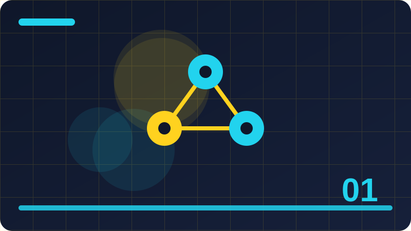

Chapter 1: AI and Your First Intelligent Program

Section 1: Welcome to AI, in Plain Words
Artificial intelligence, usually shortened to AI, is a name for computer programs that can do jobs we normally associate with human thinking. When a program sorts your photos, suggests the next word as you type, or answers a question in a chat window, it is doing a small piece of that work. It is not magic, and it is not a person hiding inside the machine. It is a set of instructions, data, and patterns that a computer follows very quickly. The goal of this book is to take away the mystery and replace it with understanding. You will learn what AI can do, what it cannot do, and how to build small, honest versions of it yourself, using only your own computer and the Python language.
This book keeps everything local and practical. You will not need an account, a key, a payment, or a connection to a large outside service. Every example runs on your own machine, on small files you create yourself. That choice is deliberate. When you can see the data, read the code, and change one thing at a time, you learn how the whole thing actually works. A small program that sorts your own notes into groups is a better teacher than a giant system you cannot inspect. Small programs also fail in ways you can see and fix, and fixing failures is where real learning happens.
You do not need advanced mathematics to start. You need curiosity, patience, and a willingness to try things, break them, and try again. If you can write a simple Python program that reads a file, makes a decision with an if statement, and prints a result, you already have enough to begin. Later chapters will introduce new ideas one at a time: data, patterns, predictions, rules, and models. Each idea will be explained in plain words first, and only then shown in code. If a word sounds technical, this book will define it the first time it appears, and you will meet it again in later examples until it feels familiar.
By the end of this chapter you will have written your first intelligent program. It will be a tiny thing: a program that reads a short message, looks for clues in the words, and guesses what kind of message it is. That is a real AI task, even though it is small. It is called classification, and you will meet it again and again in this book. The difference between your tiny program and a huge commercial system is mostly size, data, and speed, not a different kind of magic. Starting small gives you the mental model that makes the big systems make sense later.
As you read, keep a notebook, paper or digital, where you write down questions and surprises. When a program behaves in a way you did not expect, write down what you expected, what happened, and what you changed. That habit is the single most useful skill in this whole book, because AI work is mostly careful observation: what data went in, what the program did, and what came out. Nobody builds a perfect system on the first try. Good builders build a small version, test it, look at the mistakes, and improve it step by step.
Check: In your own words, what is the difference between a program that looks intelligent and a person who understands something?
Section 2: What This Book Will Teach You
This book is a practical path from complete beginner to someone who can build small, useful AI tools on their own computer. It is organised so that each chapter adds one clear skill. Early chapters explain ideas: what intelligence means for a computer, what data is, and how programs learn patterns from examples. Middle chapters show you how language, prompts, and agents work, and how to keep them safe and honest. Later chapters guide you through building real tools: a note summariser, a search tool over your own files, and a task helper. The final chapters bring those pieces together into one capstone project called AIDay, a personal assistant toolkit that runs entirely on your own machine.
You will notice a pattern in every chapter. First, an idea is explained in plain words, with an everyday comparison. Then a small Python example shows the idea working on a tiny set of data you can read in full. Then you are asked to change something, break something on purpose, and observe what happens. That cycle matters more than memorising definitions. AI is a craft as much as a subject, and crafts are learned by doing. If you only read about sorting, you will not remember it as well as if you sorted ten of your own notes and watched the program get two of them wrong, then fixed it.
The book also teaches judgement, not just technique. A large part of building AI well is knowing when not to use it, when to ask a human to check, and when a simple rule is better than a complicated model. You will learn how to test a program honestly, how to notice when it is guessing, and how to describe its limits clearly to other people. These are the skills that separate a careful builder from someone who just copies impressive-looking code. Employers, collaborators, and users all trust builders who can say, plainly, what their tool can and cannot do.
Safety runs through the whole book, not just one chapter. You will learn why AI systems need input checks, output checks, safe defaults, and human review. One important boundary is set right here at the start: this book never teaches you how to defeat safeguards on systems you do not control, and it never gives ready-to-use tricks for bypassing protections on live services. When we discuss jailbreaking and prompt injection in later chapters, we discuss them defensively, so you can recognise them and protect your own tools. All your practical work uses your own toy examples and your own files, where experimenting is safe and fair.
Finally, this book respects your time and your machine. Everything uses Python's standard library, which means the code you write here will run without installing extra packages or signing up for anything. That also means the skills transfer: files, lists, dictionaries, loops, and functions are the same building blocks used in larger systems. By the end, you will not only understand AI better, you will have a small portfolio of working tools and a clear story about how each one works, what data it uses, and what its limits are.
Check: What three tools will you build in the later chapters of this book, and what do they have in common?
Section 3: A Short, Honest History of AI
The story of AI did not begin with the chatbots of recent years. It began decades ago, when mathematicians and engineers asked a simple question: can a machine follow rules well enough to solve problems that seem to require thought? Early computers in the 1950s could play simple games, prove simple theorems, and solve puzzles by searching through possibilities step by step. Those programs were impressive because they made a machine do something that looked thoughtful, but they were built from hand-written rules. A programmer had to think of every rule in advance, and if a situation was not covered by a rule, the program was stuck.
In the following decades, researchers tried many approaches. Some built expert systems: large collections of rules written by specialists, for example doctors or engineers, so a program could answer questions in one narrow field. These systems worked well when the rules were clear, but they were expensive to build and brittle when the world changed. Others explored learning from data instead of hand-written rules. If a program could look at many examples and find patterns by itself, it would not need a human to write down every rule. That idea, called machine learning, grew slowly at first because computers were slow and data was scarce, but it kept improving as both became more plentiful.
A turning point came when computers became fast enough, and datasets large enough, for programs to learn from millions of examples. Systems that recognised handwriting, speech, and images began to work well enough for everyday use. Later, systems trained on huge amounts of text learned to predict language so well that they could hold conversations, summarise documents, and write code. Each wave of progress brought excitement, and each wave also brought over-claims. People have several times announced that fully human-like intelligence was just around the corner, and each time the reality turned out to be narrower and slower than the headlines suggested.
That history teaches a useful lesson: progress in AI is real, but it is uneven. Some tasks, like recognising patterns in large datasets, have improved dramatically. Other tasks, like common-sense reasoning, understanding a situation the way a person does, or knowing when it does not know something, remain hard. A good student of AI learns to ask, for any new claim, what exactly was tested, on what data, and with what limits. Headlines often hide those details. This book will keep returning to that question, because it protects you from both hype and fear.
The history also explains why this book starts small. The most durable ideas in AI are old ones: searching, sorting, matching patterns, counting, and making decisions from evidence. Modern systems combine those ideas at enormous scale, but the ideas themselves are understandable. When you build a tiny classifier in this chapter, you are practising the same kind of thinking that researchers used in the 1950s and that engineers still use today, only with better tools and faster machines. Understanding the old ideas makes the new systems far less mysterious.
Check: Why did early rule-based AI systems struggle when they met a situation no rule covered?
Section 4: Machines, Programs and Minds
It helps to keep three words separate: machine, program, and mind. A machine is the physical computer: its processor, memory, and storage. A program is a set of instructions that tells the machine what to do, step by step. A mind is something else entirely: the lived experience of a person, with memories, feelings, intentions, and awareness. AI lives in the middle word. It is a program, running on a machine, that performs tasks we associate with minds. Keeping that distinction clear prevents a lot of confusion, because it reminds you that an impressive output is still the result of instructions and data, not of a hidden person.
Consider a calculator. When you type two plus two, it answers four instantly. Nobody thinks the calculator understands arithmetic the way a child does, yet it performs the task reliably. AI programs are similar, only broader. A program that sorts emails into "urgent" and "not urgent" does not feel urgency. It counts words, weighs clues, and applies a rule or a learned pattern. The result can be useful even though no understanding is present. Usefulness and understanding are different things, and much of AI's value comes from usefulness without understanding. A spell checker does not know what your essay means, but it still catches mistakes.
People often talk about AI as if it has intentions: it "wants", "tries", "decides", or "lies". Those words are convenient shorthand, but they can mislead. When a chatbot produces a false statement, it is not lying in the human sense, because lying requires intending to deceive. The program is producing text that follows patterns, and sometimes those patterns lead to a falsehood. Calling that a lie makes it sound deliberate, which hides the real cause and the real fix. In this book we will use careful language: a program outputs, predicts, guesses, or classifies. When it is wrong, we ask what data and what pattern led it there, rather than assigning it a motive.
That care matters when you build things for other people. If you describe your tool as "understanding" your users, they may trust it more than they should. If you describe it as "matching patterns in the words you type and guessing the most likely category", they will use it wisely, checking important results themselves. Honest descriptions are not modesty for its own sake; they are a safety feature. A user who knows a tool guesses will double-check a medical, financial, or legal result. A user who believes a tool understands may not.
At the same time, do not undervalue what programs can do. A program can read a thousand documents in seconds, notice a pattern across them, and summarise the result. A person could do the same job, but slowly and with more mistakes from tiredness. The best uses of AI pair the strengths of both: the machine handles scale, speed, and pattern-finding, while the person handles judgement, context, and responsibility. That partnership is the theme of the practical chapters, where your tools will assist you rather than replace your thinking.
Check: Give an example of a useful program that performs a task without understanding it the way a person would.
Section 5: Your First Intelligent Program
Now it is time to build something. Our first program will read a short message and guess whether it is a question, a task, or a note. This is a tiny version of a real AI job called text classification, where a program assigns a label to a piece of text. We will do it with simple rules first, because rules are easy to read, easy to test, and easy to improve. Later in the book you will see how a program can learn such rules from examples instead of having them written by hand, but starting with hand-written rules teaches you what a classifier is actually deciding.
Open a new file and type the program below. It uses only basic Python: a function, a list, a loop, and simple string checks. The function looks at a message, turns it into lower case so that "Buy" and "buy" match, and then checks for clues. A question mark or a word like "what" suggests a question. Words like "buy", "call", or "finish" suggest a task. Anything else is treated as a note. That final step, the fallback, is important: every classifier needs an answer for inputs it has never seen, and "note" is our honest default here.
def classify(message):
text = message.lower()
if "?" in text or text.startswith(("what", "how", "why", "when")):
return "question"
if any(word in text for word in ["buy", "call", "finish", "send", "book"]):
return "task"
return "note"
for sample in ["Buy milk tomorrow", "What time is the meeting?", "The garden looks lovely today"]:
print(sample, "->", classify(sample))Run the program and look at its output. It should label the first message a task, the second a question, and the third a note. Now try your own messages. Try "How do I buy tickets?" and see what happens: it contains both a question word and a task word, and whichever check comes first wins. That is not a bug in the usual sense; it is a design decision, and it shows you something real about classifiers. When clues conflict, the order of the rules decides the answer. Real systems face the same problem at a much larger scale, and part of building them well is deciding, and documenting, how conflicts are resolved.
Try to break the program. Give it an empty message, a message in another language, or a message like "Call me, why don't you?" and watch what it does. Write down the mistakes. A classifier that gets everything right on three examples has not been tested; it has only been demonstrated. Testing means trying the awkward cases, the edge cases, and the cases you did not design for. Keep a small list of test messages as you go through this book, and add to it every time you find a case your program handles badly. That list becomes your test set, and later chapters will show you how to use test sets properly.
Finally, notice what this program does not do. It does not understand milk, meetings, or gardens. It does not know what tomorrow means. It matches shapes in text and returns a label. Yet it is already useful: imagine sorting a hundred short notes this way before reading them yourself. That gap between "does not understand" and "still useful" is where most real AI tools live, and it is a good place to start building.
Check: What label does the program give to "How do I buy tickets?", and why does the order of the checks matter?
Section 6: Running Python and Reading Errors
Before you go further, make sure you can run Python comfortably and read its error messages without fear. An error message is not a judgement on your ability; it is the computer telling you, in its own blunt way, what went wrong and where. Most beginners treat errors as failures, but experienced programmers treat them as the main source of information. When a program crashes, the last few lines usually name the problem: a misspelt variable, a missing bracket, or a value of the wrong type. Learning to read those lines calmly will save you more time than any other single skill in this book.
Start by checking your Python version from a terminal or command prompt with the command python3 --version, or python --version on some systems. You need a recent version of Python 3, and nothing else. All the code in this book uses only the standard library, so you should not need to install packages. If a command fails, check that you typed it exactly, including the dashes, and that you are in the right folder. Small typing differences cause most early problems, and they are easy to fix once you spot them.
When you run a file, do it from the folder where the file lives, for example python3 my_program.py. If it reports a SyntaxError, look at the line it points to and the line just before it, because the real mistake, such as a missing closing bracket or quote, is often one line earlier. If it reports a NameError, you have used a name that was never defined, which usually means a spelling mistake or a variable defined inside a function that you tried to use outside it. If it reports a TypeError, you have combined values in a way Python does not allow, like adding a number to a word.
Build a habit of fixing one error at a time. Read the last line of the error first, because that is the summary, then read the line numbers to find where it happened. Change one thing, run the program again, and see whether the error changes. Changing five things at once makes it impossible to tell which change helped. Keep your programs small while you are learning, so that when something breaks, there are only a few lines to inspect. As your programs grow, this habit scales with them.
Also learn to use print statements as a diagnostic tool. When a program gives a surprising answer, add a print that shows the value of a variable at a key point, run it, and compare what you see with what you expected. Remove the extra prints once you understand the problem, or keep a few that help you follow the program's decisions. Professional programmers use more advanced tools, but print-based checking remains a perfectly respectable way to understand a small program, and it works everywhere.
Finally, save your work often and keep versions. When a program works, copy it before you change it, or at least note what you changed. That way, if a change makes things worse, you can go back. This book's later projects, especially the AIDay toolkit, will reward that habit, because they grow chapter by chapter and a working earlier version is always worth keeping.
Check: You get a NameError for a variable you thought you defined. What are the two most likely causes?
Section 7: Input, Processing and Output
Almost every AI system, from the smallest classifier to the largest language model, can be described in three stages: input, processing, and output. Input is what goes in: text you type, a file you load, or numbers from a sensor. Processing is what the program does with that input: it counts, matches, weighs, compares, or transforms it. Output is what comes out: a label, a summary, a prediction, or an action. Holding this simple picture in mind helps you understand any new system you meet, because you can always ask: what went in, what happened to it, and what came out?
Our classifier from Section 5 fits this picture neatly. The input is a short message. The processing is lower-casing the text, checking for question marks and keywords, and choosing the first matching rule. The output is a single label: question, task, or note. When the program makes a mistake, you can now locate the stage where it went wrong. Was the input unexpected, for example empty or in a language the rules do not cover? Was the processing too simple, for example checking words in the wrong order? Or was the output format unclear, for example a label the user did not understand? Naming the stage makes fixing easier.
This picture also helps you design new tools. Before writing any code, write down in plain words what the input will be, what processing should happen, and what output you want. For a note summariser, the input is a long note, the processing is picking the most important sentences, and the output is a short summary. For a search tool, the input is a question, the processing is comparing the question with your saved notes, and the output is a ranked list of matches. Writing those three lines first prevents the common beginner mistake of starting to code before knowing what the program is supposed to do.
Data flows through these stages, and each stage can introduce problems. Input can be messy: typos, missing values, or mixed languages. Processing can be biased: if your keyword list only covers words you personally use, messages from other people may be misclassified. Output can be misleading: a confident label hides the fact that the program was unsure. Good builders check each stage. They clean inputs where sensible, test processing on varied examples, and present outputs with appropriate caution, for example by saying "best guess" when the evidence is weak.
A useful exercise is to draw the three stages for a system you use every day, such as a spam filter or a music recommendation. What is the input? Probably your emails or your listening history. What is the processing? Probably pattern matching and counting. What is the output? A folder assignment or a playlist. You do not need to know the exact internals to draw this picture, and drawing it trains you to think like a builder rather than a passive user. Later chapters will add detail inside the processing box, but the three-stage picture will never stop being useful.
Check: For a spam filter, what would you put in each of the input, processing and output boxes?
Section 8: Why Small Examples Teach Big Ideas
Beginners sometimes worry that small examples are toys, not real AI. That worry is understandable, but it misses how learning works. A small example lets you see every piece: the data, the code, and the result. You can read all ten training examples, trace the program line by line, and understand exactly why it gave a particular answer. With a huge system, you cannot do any of that. You can only observe inputs and outputs and guess at the middle. Starting small is therefore not a compromise; it is the only way to build a true mental model before scale hides the details.
Small examples also let you experiment safely. You can change a keyword, remove a rule, or feed in a strange message, and immediately see the effect. That fast feedback loop is how intuition forms. After you have watched a classifier fail on twenty of your own test messages, you understand classification far better than after reading twenty pages about it. You begin to anticipate failure modes: ambiguous messages, overlapping clues, and words that mean different things in different contexts. Those failure modes appear in large systems too, so your small-scale intuition transfers directly.
There is another benefit: small examples are honest. A tiny program cannot pretend to be smarter than it is, because you can see its tricks. When a big product gives a fluent answer, it is tempting to assume deep understanding. When your own program gives a fluent-looking label, you know it came from a keyword list. That knowledge protects you from hype. You learn to ask of any system, however impressive, what data it was trained on, what patterns it uses, and where it is likely to fail. Those questions are the mark of a serious student of AI.
Small examples also respect your resources. They run instantly, use almost no memory, and work without an internet connection. You can practise anywhere, on any computer, and you can share your work with others who can run it without accounts or payments. That accessibility matters for learning communities, where not everyone has the same hardware or budget. The tools you build in this book are designed to be shared in exactly that way: a single Python file, a few small data files, and a clear explanation.
Finally, remember that many real products began as small examples. A search tool over your own notes, built in this book, uses the same core idea as a large search engine: compare a query with documents and rank the matches. The large engine adds scale, speed, and many refinements, but the core idea is the one you will practise here. Do not despise the small version; master it, and the large version will make sense when you meet it.
Check: Why is it easier to learn from a classifier trained on ten examples you can read than from one trained on ten million you cannot?
Section 9: Guessing, Confidence and Being Wrong
Every AI prediction is, at heart, a guess based on evidence. Some guesses are strong, because the evidence is clear and plentiful. Others are weak, because the evidence is thin or conflicting. A good AI tool should behave differently in those two cases: it should answer confidently when the evidence is strong, and it should hesitate, ask, or say it is unsure when the evidence is weak. Learning to build that behaviour into your programs is one of the most valuable skills in this book, and it starts with a simple idea: never hide uncertainty from the user.
Consider our classifier again. The message "Buy milk tomorrow" contains a clear task word, so the guess "task" is fairly confident. The message "Call me, why don't you?" contains both a task word and a question pattern, so any single label is a weak guess. Our current program hides that weakness: it returns one label with no hint that it was torn between two. A better version could return both the label and a note about the conflict, or a score showing how strong the evidence was. Later chapters will show you how to compute such scores, but the principle can be practised now: whenever your program chooses, ask yourself how sure it should be.
Being wrong is not a scandal; it is expected. Any classifier will misclassify some inputs, because language is ambiguous and the world is messy. What matters is how wrong, how often, and on what kinds of inputs. A classifier that fails on jokes and poetry but succeeds on shopping lists may be perfectly fine for sorting shopping lists. A classifier that fails on messages from one group of people but succeeds for another has a fairness problem, which you will study in a later chapter. Measuring mistakes by type, not just counting them, is the beginning of honest evaluation.
You should also expect your own programs to be wrong in instructive ways. When you test a classifier and it surprises you, resist the urge to immediately "fix" it by adding a special rule for that one case. Instead, ask whether the case reveals a general weakness: a missing keyword, a wrong order of checks, or an assumption about language that does not hold. Fixing the general weakness improves many future cases; patching one case often creates new mistakes elsewhere. This discipline, fixing causes rather than symptoms, is what makes a builder's work durable.
Finally, practise describing mistakes plainly. Instead of saying "the AI failed", say "the classifier labelled this question as a task because the word 'call' appeared before the question check ran". That sentence names the cause and points to a fix. Vague descriptions hide causes; precise descriptions reveal them. Throughout this book, you will be asked to describe mistakes this precisely, because it is the language of good AI work.
Check: Why is a program that says "I am not sure" sometimes more useful than one that always answers confidently?
Section 10: Your Learning Setup and Habits
Good learning needs a good setup, and yours can be simple. You need a computer with Python 3, a text editor you like, and a folder for this book's work. Create a folder called ai-book, and inside it a folder for each project as you build it. Keep your small experiment files there, with clear names like classifier_v1.py and classifier_v2.py, so you can compare versions. Avoid scattering files across your desktop, because lost files waste learning time and break the habit of comparing versions.
Your editor can be anything that saves plain text: a simple editor, a code editor, or the editor built into a learning environment. What matters is that you can open a file, change it, save it, and run it quickly. Learn the keyboard shortcuts for saving and running, because you will use them hundreds of times. If you are unsure which editor to choose, pick the simplest one you already know and start; you can change later. The editor is a tool, not the lesson, and time spent choosing tools is time not spent learning AI.
Set up a routine that fits your life. Short, regular practice beats rare, long sessions. Thirty minutes a day, in which you read one section, run its example, and try one change, will take you further than a single five-hour session once a month. During each session, keep your notebook open. Write down what you tried, what happened, and one question to investigate next time. That record becomes a map of your learning, and it is surprisingly satisfying to look back after a few weeks and see how far you have come.
Expect frustration, and plan for it. Every learner hits a point where a program refuses to work and the error message seems meaningless. When that happens, take a break, re-read the error slowly, and try the smallest possible version of the program. Often, a five-line test reveals the problem that a fifty-line program hid. Ask for help when you need it, describing what you tried and what happened, rather than just saying it does not work. The habit of describing problems precisely, which you practised in the last section, helps other people help you.
Finally, protect your motivation by building things you care about. As you learn each idea, ask how it could help with your own notes, tasks, or interests. A classifier that sorts your own messages is more motivating than one that sorts made-up examples, because the result matters to you. Later chapters will encourage you to adapt every project to your own files and needs. That personal connection is not a distraction from learning; it is the fuel that keeps learning going.
A useful way to keep practice sessions productive is to end each one by writing down the single most surprising thing you learned. Surprises are valuable because they mark the exact place where your mental model was wrong, and correcting a model at that precise point teaches more than hours of smooth, unsurprising reading. Over a month of sessions, those surprise notes form a personal map of your progress, showing which ideas took longest to settle and which experiments finally made them click for you.
Check: What three things should you write in your notebook during each practice session?
Section 11: Talking to Computers in Plain Words
When people say they want to "talk to AI", they usually mean typing words and getting words back. That exchange feels like conversation, but under the surface it is pattern matching on text. Your words are broken into pieces, compared with patterns the system has learned, and used to produce a reply that fits those patterns. There is no shared world between you and the program, no memory of yesterday unless the program was designed to keep one, and no sense of what your words mean to you. Remembering that gap helps you write better inputs: clear, specific, and complete, rather than relying on the program to guess your intention.
Clear input starts with saying what you want, not just hinting at it. Compare "tell me about dogs" with "give me three short facts about how dogs were domesticated, suitable for a ten-year-old". The second version names the topic, the amount, the style, and the audience. A program cannot read your mind, so the more of your intention you put into words, the better its pattern matching can work. This is not about using fancy language. It is about being concrete: name the thing, the number, the format, and the purpose. You will practise this skill in the prompting chapters, but it is worth starting now, because every interaction with an AI tool is an exercise in clear writing.
Ambiguity is the main enemy of clear input. Words like "it", "that", and "soon" assume shared context that a program may not have. If you write "summarise it", the program must guess which document you mean. If you write "summarise the three-paragraph note about watering plants that I pasted below", there is nothing to guess. Humans resolve ambiguity constantly, using tone, history, and common sense, often without noticing. Programs have far less of that background, so they either guess silently or fail in ways that look strange. Good input removes ambiguity before the program has to guess.
Another useful habit is giving an example of what a good answer looks like. If you want a list, show a short list. If you want a label like "task" or "note", show one message labelled each way. Examples teach a program's pattern matching far more effectively than abstract instructions alone, because they show the shape of the answer. Your classifier in Section 5 works the same way: its rules are, in effect, examples of what counts as a question or a task, written as code. Later, when you build systems that learn from examples, this idea will return in a stronger form.
Finally, expect to iterate. Rarely does the first version of an instruction produce the best result. Try it, read the output, notice what is missing or wrong, and adjust the input. That loop, try, observe, adjust, is the same loop you use when debugging code. Treat interaction with AI as a collaboration in which you remain responsible for the result: you check the output, you correct mistakes, and you never pass on an answer you have not at least glanced at. That responsibility does not go away just because a machine produced the words.
Check: Rewrite the vague request "tell me about it" as a clear request for a specific topic, length and audience.
Section 12: What a Chatbot Actually Does
A chatbot is a program that takes your typed words and returns typed words in reply. Inside, it usually does several jobs in sequence. First, it turns your words into a form the computer can process, often by splitting them into pieces and turning those pieces into numbers. Then it uses patterns learned from large amounts of text to predict what words should come next. Then it assembles those words into a reply, sometimes checking the reply against simple rules before showing it to you. None of those steps involves understanding your life, your feelings, or the truth of the matter in the human sense. They involve statistics, patterns, and rules.
That description may sound disappointing, but it is also empowering. Once you see a chatbot as a prediction machine, its strengths and weaknesses become predictable. It will be fluent, because it has learned the patterns of fluent writing very well. It will be good at common topics, because common topics appear often in its training data. It will be weaker on rare topics, recent events it has not seen, and questions that require checking a fact rather than guessing a plausible sentence. It may also invent details that sound right, because a plausible-sounding sentence and a true sentence can look identical to a pattern matcher. Knowing this, you learn to verify important claims rather than trusting fluency.
Chatbots also differ from each other. Some are connected to search tools and can look up current information. Some run entirely on one machine and can only use what they were trained on. Some remember earlier turns in a conversation, while others treat each message as fresh. When you use a chatbot, it is worth finding out which kind it is, because that changes what you should expect. A chatbot without search cannot reliably tell you today's news, however confidently it speaks. A chatbot without memory cannot remember your name from yesterday unless someone built that feature in deliberately.
Your own small programs in this book will not be chatbots in the commercial sense, but they will share the same skeleton: take input, process it with patterns or rules, produce output. When you build a note summariser, you will pick sentences rather than predict words, but the shape is the same. When you build a search tool, you will match a question against documents rather than generating a reply, but the shape is the same. Learning the skeleton now means that every fancier system you meet later will look like a variation on something you already understand, rather than a mystery.
A final caution: do not share private information with a chatbot unless you know where that information goes. A message typed into a website may be stored, reviewed, or used to improve the service. That may be acceptable for a general question, but not for passwords, personal documents, or other people's private details. This book's local approach avoids that problem entirely: your examples run on your own machine, and nothing leaves it. Keep that standard in mind whenever you use an outside service.
Check: Why might a chatbot give a confident but wrong answer about a recent event?
Section 13: Narrow AI and General AI
People often divide AI into two broad kinds: narrow AI and general AI. Narrow AI does one kind of job well, within clear limits. A spam filter, a chess program, a speech recogniser, and a program that sorts your notes are all narrow AI. Each is designed for a specific task, trained or built for that task, and judged on that task alone. Almost every AI system in everyday use today is narrow AI, even when it looks flexible, because its flexibility comes from being trained on a wide range of examples of one kind of job, such as producing text, rather than from general understanding.
General AI, sometimes called strong AI or artificial general intelligence, would be something different: a system that could learn any intellectual task a person can, transfer knowledge between unrelated fields, and reason about new situations the way people do. No such system exists today, despite frequent claims. What exists are systems that are very good at particular patterns, and that can appear general because language is a flexible medium. A chatbot can discuss cooking, history, and programming in the same conversation, which looks general, but it is still producing language patterns, not cooking a meal, visiting a historical site, or truly understanding a program's purpose in the world.
Keeping this distinction clear protects you from two mistakes. The first is over-trust: assuming that because a system writes well about medicine, it can diagnose illness safely. Writing about medicine and practising medicine are different jobs, and a language system has only practised the first. The second mistake is under-appreciation: dismissing narrow AI because it is not general. Narrow tools can still be enormously useful. A program that reliably sorts a thousand support messages, or finds the right paragraph in a manual, saves real time and reduces real errors, even though it understands nothing.
As a builder, you will work almost entirely with narrow AI, and that is a good thing. Narrow tools have clear goals, testable behaviour, and honest limits. You can say what your tool is for, test it on examples from that job, and warn users when they step outside its range. A general system, by contrast, is hard to test, because its range is everything. Starting narrow teaches you the discipline of defining a job well, which is the foundation of all good AI work, however large the system later becomes.
When you read news about AI, ask which kind is being described. If an article claims a breakthrough towards general intelligence, check whether the evidence is a narrow test passed impressively, or a broad ability demonstrated across genuinely new situations. Usually it is the first. That does not make the breakthrough unimportant, but it keeps the claim honest. This book will help you make that judgement for yourself, chapter by chapter.
Check: A chatbot discusses both cooking and history fluently. Does that prove it is general AI? Why or why not?
Section 14: Data Comes First, Models Second
Beginners often want to start with the model, the clever part of the system. Experienced builders start with the data. Data is the collection of examples, texts, numbers, or records that a program learns from or works on. A model is the program's learned pattern, or its set of rules, for handling new inputs. The quality of the model depends almost entirely on the quality of the data. If the data is small, messy, or biased, even a sophisticated model will produce poor results. If the data is clean, representative, and well understood, even a simple model can work surprisingly well.
Consider a classifier that sorts messages into tasks and notes. If your examples all use the word "buy" for tasks, the program will learn, or be told, that "buy" means task. If real messages use many other task words, like "arrange", "prepare", or "call", and your data never shows them, the program will miss those tasks. The fault is not in the model's cleverness; it is in the data's coverage. Fixing it means collecting better examples, not adding complexity to the code. This lesson repeats at every scale: large systems fail most often because of data problems, not because their mathematics was too simple.
Good data work has a few habits. First, look at your data. Read a sample of it yourself, before you build anything, and notice what it contains and what it lacks. Second, check its source: where did it come from, who created it, and what might be missing or skewed? Third, keep it organised: clear file names, a note about what each file contains, and a separation between examples used for building and examples used for testing. Fourth, respect privacy: do not collect other people's personal information without a good reason and permission, and do not feed private data into systems you do not control.
In this book, your data will be small and yours: notes you write, lists you make, and short texts you invent for practice. That is deliberate, because small data you fully understand teaches the habits that large data requires. You will practise reading your data, spotting gaps, and testing on examples the program has not seen during building. Later chapters will formalise those habits into training sets and test sets, but the habit itself starts here: always look at the data first.
A useful question to ask before any AI project is: do I have the data this job needs, and is it the right data? If the answer is no, the honest next step is to gather or create better data, or to choose a simpler job that your data can support. Many failed projects could have been saved by asking that question early. As you build through this book, make it your first question for every new tool.
Check: Your classifier misses tasks that use the word "arrange". Is the best first fix more complex code, or better data? Explain why.
Section 15: Patterns Are Everywhere
A pattern is a regularity: something that repeats often enough to be useful for guessing what comes next. In language, patterns include common word pairs, sentence shapes, and the way questions usually end with a question mark. In numbers, patterns include trends, such as sales rising each December, and groupings, such as customers who buy similar items. In images, patterns include edges, shapes, and colours that tend to appear together. AI, at its core, is the art of finding patterns in data and using them to make predictions about new data.
Humans are natural pattern finders too. You recognise a friend's handwriting, notice that traffic is worse on Friday afternoons, and guess the end of a familiar song. Programs do the same job differently: they count. They count how often words appear together, how often a feature appears with a label, or how close numbers are to each other. Counting at scale reveals patterns that are invisible to a person reading a few examples, but that are obvious once thousands of examples are tallied. That is why data matters so much: patterns only emerge when there are enough examples to count.
Not all patterns are meaningful. Some are coincidences: a pattern that appears in a small sample may vanish in a larger one. Others are misleading: a pattern may reflect a bias in how the data was collected, rather than a truth about the world. For example, if all your task examples happen to mention mornings, a program might wrongly learn that morning messages are tasks. Learning to distrust patterns until they have been tested on fresh data is a core AI skill, and later chapters will teach you testing methods that do exactly that.
Patterns also have limits. A pattern describes what usually happens, not what must happen. A classifier that has learned that messages with question marks are usually questions will be wrong about a rhetorical message like "Who cares?" followed by no real question. That is not a failure of the idea of patterns; it is a reminder that patterns are guides, not laws. Good builders keep that in mind and design fallbacks: a way to say "unsure", a way for a human to correct the program, and a way to learn from corrections over time.
As you work through this book, practise naming patterns out loud. When your program sorts a message correctly, ask which pattern it used. When it fails, ask which pattern misled it. That habit turns a mysterious result into an understandable one, and it builds the vocabulary you will need for later chapters, where patterns get names like features, weights, and probabilities. For now, remember the simple version: AI finds patterns, patterns guide guesses, and guesses must be tested.
Check: Give an example of a pattern in everyday language that a program could count, and one way that pattern could mislead it.
Section 16: Rules Versus Learning
There are two broad ways to give a program intelligence: write the rules yourself, or let the program learn patterns from examples. Rule-based systems use instructions written by a person: if the message contains a question mark, label it a question. Learning systems use examples: show the program a hundred messages already labelled as questions or tasks, and let it work out which features predict each label. Both approaches are real AI, both have strengths, and choosing between them is one of the first design decisions you will make as a builder.
Rule-based systems are transparent. You can read the rules, understand why a decision was made, and fix a mistake by changing a rule. They work well when the job is clear and the rules are few: sorting messages by a handful of keywords, validating a form, or applying a company's policy. Their weakness is scale. When a job has hundreds of exceptions, or when the rules depend on subtle combinations of clues, writing and maintaining them becomes slow and error-prone. A rule list that started simple can grow into a tangled mess that nobody fully understands.
Learning systems handle complexity better, because they can weigh many clues at once and adjust those weights from data. They work well when you have plenty of labelled examples and when the patterns are too subtle for hand-written rules, such as recognising handwriting or the tone of a message. Their weakness is opacity and data hunger. A learned model may make a decision you cannot easily explain, because its knowledge is spread across thousands of numbers rather than written as readable rules. It also needs good data: too few examples, or biased examples, and it will learn the wrong patterns confidently.
In practice, many good systems combine both. Rules handle the clear cases and the safety limits, while learning handles the fuzzy cases. For example, a program might use a rule to refuse obviously harmful requests, and a learned model to sort ordinary messages. This book follows that combined path: you start with rules, because they teach you the job clearly, then you learn how models learn from examples, and finally you combine the two in tools that are both capable and safe. Knowing both approaches, and when each fits, is more valuable than mastering either one alone.
When you face a new problem, ask three questions. Is the job governed by clear, stable rules? Do I have enough labelled examples to learn from? And must I be able to explain every decision? The answers will point you towards rules, learning, or a combination. There is no universally best answer, only a best fit for a particular job, dataset, and audience.
A practical way to choose is to build the simplest version first, even if you suspect you will later replace it. A rule-based prototype clarifies the job, gives you test cases, and shows you what the hard cases actually are, rather than what you imagined them to be. Only then, with evidence in hand, should you invest in learning from data, because you will know exactly which weaknesses the learned model must address.
Check: A company policy has ten clear, stable rules for approving expenses. Should it use rules or learning? Give a reason.
Section 17: Your Classifier, Improved
Let us return to the classifier from Section 5 and improve it, because improving a working program teaches more than starting a new one. The original version checked question clues first, then task clues, then fell back to note. Its main weaknesses were conflict handling and a narrow keyword list. A better version can score each label instead of stopping at the first match. Scoring means counting the clues for each label, then choosing the label with the highest score. That small change makes the program's reasoning visible: you can see how many clues pointed each way.
The program below scores questions and tasks separately. Question clues include a question mark and question words. Task clues include action words. The label with the higher score wins, and a tie goes to the fallback, note, with a note that the program was unsure. You could extend this by returning the scores themselves, so the user can see the evidence. Try running it on the tricky examples from earlier, such as "How do I buy tickets?" and "Call me, why don't you?", and compare the results with the original version. Which version behaves more sensibly, and why?
def classify_scored(message):
text = message.lower()
question_score = 0
task_score = 0
if "?" in text:
question_score += 2
for word in ["what", "how", "why", "when", "where"]:
if word in text.split():
question_score += 1
for word in ["buy", "call", "finish", "send", "book", "arrange", "prepare"]:
if word in text.split():
task_score += 1
if question_score > task_score:
return "question"
if task_score > question_score:
return "task"
return "note"
for sample in ["Buy milk tomorrow", "What time is the meeting?", "How do I buy tickets?", "Call me, why don't you?"]:
print(sample, "->", classify_scored(sample))Notice two details. First, the new version splits the text into words before checking, so "somehow" no longer falsely triggers the question word "how". The original version checked whether a word appeared anywhere inside the text, which caused such substring mistakes. Splitting into words is a small but important improvement, and it introduces a concept you will meet again: tokenisation, the job of breaking text into meaningful pieces. Second, the tie case returns "note", which is honest but not ideal; a future version might return "unsure" instead. Thinking about what the fallback should be is part of design, not an afterthought.
Now extend the program yourself. Add three task words you actually use, add a test message for each, and run the program again. Did accuracy improve on your own messages? Did any old message change label? Keeping a small test list and re-running it after every change is the beginning of regression testing: making sure improvements do not break things that used to work. Professional builders do this at scale; you are doing the same thing at a scale you can see.
Scoring also makes your classifier easier to explain to someone else, which matters more than beginners often realise. Instead of saying that a message was labelled a task for mysterious reasons, you can point to the counts: two task clues and no question clues, for example, or a tie that fell back to note. That explanation lets another person check your reasoning, suggest a missing clue, or spot a word that should not count at all. Explainable decisions are debuggable decisions, and debugging is where most of the real learning in this book happens. Keep the scores visible while you are learning, even if a finished tool would hide them behind a cleaner interface, because visibility is what turns a black box into a teaching tool.
Check: Why does splitting text into words before checking keywords prevent "somehow" from counting as a question word?
Section 18: Testing Your Program Honestly
Testing is how you find out whether a program works, rather than assuming it does. Honest testing has one golden rule: test on examples the program was not built around. If you only test on the messages you used while writing the rules, you are testing memory, not ability. A program that passes only its own examples may fail badly on fresh ones. To test honestly, set aside a few examples before you build, or ask a friend to write some, and keep them untouched until testing time. Those fresh examples are your test set.
Start with a tiny test set of ten messages. Write the correct label for each before you run the program, so you cannot unconsciously change your mind after seeing the answer. Run the classifier, compare its labels with yours, and count the mistakes. Then, crucially, look at the mistakes one by one. Are they all of one type, for example questions mislabelled as tasks? Do they share a word or a shape? Patterns in the mistakes tell you what to fix next, while a bare accuracy number does not. A program that is ninety percent accurate but fails on every question is worse, for a question-sorting job, than one that is eighty percent accurate but fails evenly.
Also test the awkward cases deliberately. Empty messages, very long messages, messages with typos, messages in mixed languages, and messages that are jokes or sarcasm all belong in a thorough test set. You do not need your program to handle every one perfectly, but you need to know how it behaves on each, so you can warn users and design fallbacks. A program that crashes on an empty message is worse than one that labels it "note", because a crash stops everything. Robustness, the ability to handle odd inputs gracefully, is part of quality.
Record your test results in your notebook: the date, the version of the program, the test messages, and the mistakes. That record lets you see improvement over time, and it stops you from fooling yourself. Without a record, it is easy to remember the successes and forget the failures, or to change the test set until the program passes. With a record, progress is visible and honest. Later chapters will formalise this into training, validation, and test sets, but the habit starts with a notebook and ten messages.
Finally, remember that testing never proves a program is perfect. It only shows how it behaved on the examples you tried. New inputs can always surprise you. That is why good tools include ways for users to report mistakes and for builders to keep testing after release. Testing is not a one-time gate; it is an ongoing habit that continues as long as the tool is used.
Check: Why should you write down the correct labels for your test messages before running the program?
Section 19: When AI Gets It Wrong
AI mistakes are not random; they follow patterns, and recognising those patterns helps you fix them and warn users about them. One common pattern is ambiguity: a message that genuinely fits two labels, like "How do I buy tickets?", will be misclassified by any system forced to choose one. Another is missing vocabulary: a task described with a word your program has never seen will be missed. A third is context dependence: a word like "book" can mean reserve something or a physical object, and only the surrounding words tell you which. A program that looks at single words without context will confuse such cases.
A fourth pattern is bias in the data. If your examples come mostly from one person, one dialect, or one kind of message, the program will work best for that source and worse for others. That is not a moral judgement on the program; it is a statistical fact about learning from unrepresentative data. The fix is to broaden the data: collect examples from more people, more styles, and more situations. You will study bias and fairness in depth later, but the basic idea belongs here, because even a tiny classifier can be biased if its examples are narrow.
A fifth pattern is overconfidence. Many systems present a single answer with no hint of doubt, even when the evidence is weak. Users then trust a guess as if it were a fact. The remedy is to show uncertainty where it exists: a score, a second-best guess, or a plain statement that the program is unsure. Designing outputs that communicate doubt is a kindness to users and a mark of a careful builder. It also reduces harm, because a user who knows a result is uncertain will check it before acting on it.
When your program makes a mistake, treat it as data, not as an embarrassment. Write down the input, the expected label, the actual label, and your best guess about the cause. Over time, those notes reveal which mistake pattern dominates, and that tells you where to invest effort. If most mistakes are missing vocabulary, expand the word lists or the data. If most are ambiguity, improve the fallback or ask the user to clarify. If most are bias, broaden the examples. Fixing the dominant pattern gives the biggest improvement for the least effort.
Finally, think about the cost of mistakes. Not all errors are equal. Misclassifying a shopping note is a small inconvenience. Misclassifying a medical message, a safety warning, or a financial instruction could be serious. Good builders ask, for each job, what happens when the program is wrong, and design accordingly: stronger testing, human review, or refusing to automate high-stakes decisions at all. That judgement, weighing cost as well as accuracy, is central to responsible AI work.
Check: Name three patterns of AI mistakes described in this section, and give a short example of each.
Section 20: A Day in the Life of an AI Tool
Imagine you run a small shop and you receive dozens of short messages each day from customers: questions about opening hours, orders to prepare, and friendly notes. Sorting them by hand takes time you could spend serving customers. A tiny classifier like yours could help: it reads each message, suggests a label, and groups similar messages together, so you read all the questions first, then all the orders. You remain in charge: you check the groups, correct mistakes, and reply yourself. The tool saves time without taking over judgement, which is exactly the kind of assistance this book aims to build.
Now imagine the same tool used badly. Suppose the shop owner trusts it completely, never checks the groups, and an urgent order is mislabelled as a note and missed. The customer is disappointed, and the owner blames the tool. The fault lies not only in the misclassification, which any system will sometimes make, but in the design: a tool that hides uncertainty and encourages blind trust invites such failures. A better design would flag uncertain messages for human review, show the evidence for each label, and make corrections easy. Design choices around trust matter as much as accuracy.
Scale this picture up, and you see how AI tools fit into real workplaces. A support team uses a classifier to route messages, but humans handle the complex cases. A writer uses a summariser to draft an outline, but edits it herself. A student uses a study helper to quiz herself, but checks the answers against her textbook. In each case, the human stays responsible for the final result. That pattern, AI as assistant rather than replacement, will recur throughout this book, because it is both safer and more realistic than imagining machines that work entirely alone.
Also notice the maintenance such a tool needs. Language changes: new products, new slang, and new customer needs appear over time, and a classifier built last year may slowly become less accurate. A responsible owner reviews mistakes regularly, adds new examples, and retests. AI tools are not install-and-forget appliances; they are living systems that need care, like a garden. Budgeting time for that care is part of building honestly, and this book will show you simple routines for it.
Finally, think about who benefits and who might be harmed. A sorting tool that works well for most customers but consistently mislabels messages written in a particular dialect harms those customers by delaying their service. Noticing that harm requires looking at mistakes by group, not just overall accuracy. That habit, checking who bears the mistakes, is the beginning of fairness work, and it belongs in everyday tool maintenance, not only in academic discussions. Build it into your routine from the start.
Check: In the shop example, what design feature would have prevented the missed urgent order from going unnoticed?
Section 21: Computers Do Not Get Tired
One of the clearest advantages of a computer program over a person is endurance. A person sorting a thousand messages will get tired, lose concentration, and start making mistakes by the afternoon. A program sorting the same thousand messages will apply the same rules to the first and the thousandth with identical care, because it does not get bored, hungry, or distracted. That consistency is valuable, especially for repetitive jobs where human attention fades. It is also why AI tools are useful even when they are less clever than a person: they are reliably mediocre, while a tired person can be brilliantly right and then carelessly wrong.
Consistency cuts both ways, however. A program that makes a mistake will make the same mistake every time, on every similar input, without noticing. A person who mislabels one message might notice and correct herself on the next. A program has no such self-correction unless it was designed with one. That is why feedback loops matter: a way for users to flag mistakes, and a routine for the builder to review those flags and improve the program. Without feedback, a consistent mistake becomes a systematic failure, repeated at scale. With feedback, consistency becomes an asset, because a fix, once made, applies everywhere at once.
Speed is the companion of endurance. A program can read, count, and compare far faster than a person, which means it can handle volumes that would overwhelm any team. That speed enables new kinds of work: searching a whole library in seconds, checking every message for a safety warning, or summarising a long document before a meeting. But speed also amplifies mistakes. A wrong rule applied slowly harms a few people; the same rule applied instantly to a million messages harms many. Good builders therefore test carefully before scaling up, and they add checks that slow the system down where stakes are high, such as requiring human approval before an important action.
Memory is another quiet advantage. A program can remember every example it has seen, every rule it follows, and every decision it made, without forgetting. That record makes auditing possible: you can look back and ask why a particular message was labelled a certain way. Human memory is richer but less reliable, blending and reshaping the past. Program memory is exact but narrow, storing only what it was told to store. Designing what a program remembers, and for how long, is a privacy and safety decision as well as a technical one, and later chapters will return to it.
The lesson is balance. Use programs for what they do best: scale, speed, consistency, and exact memory. Keep people for what they do best: judgement, context, empathy, and noticing when something is off. A tool designed around that balance will outperform either partner alone, and it will fail more gracefully when it does fail, because a person is still in the loop to catch what the program cannot.
Check: Why can a program's consistency be both an advantage and a danger?
Section 22: The Human in the Loop
The phrase "human in the loop" describes a design in which a person checks, corrects, or approves a program's work before it takes effect. It is one of the most important ideas in responsible AI, and it is simple to practise. In your classifier, you are the human in the loop: you read the suggested labels, correct the wrong ones, and only then act on them. That extra step costs a little time, but it prevents most of the harm a mistake could cause, because the final decision remains human.
There are different strengths of human involvement. In the strongest form, a person approves every action before it happens. That is right for high-stakes jobs, like sending a message on someone's behalf or changing a record. In a weaker form, a person reviews a sample of actions, or only the uncertain ones, while routine cases proceed automatically. That is efficient for low-stakes jobs, like sorting notes, where a mistake is easy to undo. In the weakest form, a person only reviews after something goes wrong, which is really no loop at all. Choosing the right strength for a job is a design decision, and it should depend on the cost of a mistake, not on a desire to automate everything.
A human in the loop only helps if the human can actually judge the work. That means the program must present its results clearly: what it decided, what evidence it used, and how sure it was. A label with no explanation is hard to check, because the reviewer must redo the whole job to verify it. A label with its key clues shown is easy to check at a glance. As you build tools in this book, always ask: could a busy person verify this result in a few seconds? If not, redesign the output before you worry about improving the model.
Humans in the loop also need a way to correct the program and have that correction matter. If a user fixes a label but the program never learns from the fix, the same mistake will recur forever, and the user will stop bothering to correct it. Even a simple correction log, reviewed regularly by the builder, closes the loop. More advanced systems learn from corrections automatically, but the principle is the same: corrections are valuable data, and a system that ignores them wastes its best source of improvement.
Finally, be honest about cases where a human in the loop is decoration rather than protection. If a person must approve a thousand actions a day, they will start approving without reading, and the loop becomes a rubber stamp. In such cases, the honest solution is to reduce the volume, automate only the safest cases, or redesign the job. A loop that nobody can genuinely operate is worse than no loop, because it creates a false sense of safety.
Check: Why might requiring a human to approve a thousand actions a day make safety worse rather than better?
Section 23: Simple Tools You Already Use
You already use AI every day, probably without calling it that. Your phone's keyboard suggests the next word as you type. Your email service sorts some messages into spam. Your photo app groups pictures by the people in them. Your music app suggests songs you might like. Each of these is a narrow AI tool, built from patterns in data, and each follows the input, processing, output picture from Section 7. Recognising them as AI demystifies the field: it is not only about futuristic robots, but about ordinary software that has quietly become smarter.
Look closely at one of these tools and ask what patterns it uses. A keyboard suggestion probably counts which words commonly follow the words you just typed, based on large amounts of text. A spam filter probably counts words and senders associated with unwanted mail. A photo grouping tool probably compares shapes and colours in faces. None of these tools understands your messages, your friendships, or your taste in music. They match patterns, and pattern matching is often enough to be useful. Noticing that gap, between usefulness and understanding, is the key insight of this chapter, and it applies to every tool you will meet.
Also notice how these tools handle mistakes. A keyboard suggestion can be ignored with a tap, so its mistakes cost almost nothing. A spam filter that hides an important message costs more, so good filters provide a spam folder you can check, rather than deleting messages outright. A photo grouping mistake is a minor embarrassment, easily corrected. The design of each tool reflects the cost of its mistakes, whether the designers thought about it explicitly or not. As you build, you will learn to make those trade-offs deliberately.
Try an experiment this week: for one familiar tool, keep a small log of its suggestions and whether they were helpful. You will probably find it is right often, wrong sometimes, and wrong in patterned ways, for example struggling with names, slang, or rare topics. That log is a miniature version of the evaluation work professionals do, and it trains your eye to see AI as a fallible tool rather than an oracle. It also gives you ideas for your own projects: a tool you wish existed, or an existing tool you could improve for your own needs.
Finally, remember that familiarity does not mean the tool is neutral. A recommendation system shapes what music, news, or videos you see, which shapes what you learn and enjoy. A spam filter decides which voices reach your inbox. These are real influences, and understanding that they come from pattern matching, not from wisdom, helps you use them critically. You can enjoy a recommendation while still seeking out other sources, and you can check a filtered folder before assuming nothing important arrived.
Check: Pick one AI tool you use daily and describe its input, processing and output in one sentence each.
Section 24: Learning Is Not Memorising
It is tempting to think that a program learns by memorising examples: storing every message it has seen and looking up the closest match when a new one arrives. Memorising is part of some systems, but true learning is different. Learning means finding a general pattern that applies to new examples, not just recalling old ones. A student who memorises last year's exam answers will fail this year's exam if the questions change. A student who understands the subject will handle new questions. Programs face the same distinction, and later chapters will give it a name: generalisation.
Your rule-based classifier does not memorise messages; it applies general rules about question marks and action words to any message. That is why it can handle messages it has never seen. A program that only memorised its training messages would fail on every new message, however similar. The power of rules and learned patterns alike is that they generalise: they capture something that holds across many examples, not just one. When you build learning systems later, you will judge them by how well they generalise to fresh data, not by how well they repeat old data.
Memorisation can masquerade as learning, and that is a trap. If a program is tested on the same examples it learned from, it will look perfect even if it learned nothing general. That is why honest testing, from Section 18, insists on fresh examples. A high score on familiar data proves only that the program can remember; a good score on fresh data suggests it has learned something real. Keep that distinction in mind whenever you see an impressive accuracy claim. Ask what data it was tested on, and whether that data was fresh.
Humans also confuse memorisation with learning in their own study. Reading a chapter twice may feel like learning, but if you cannot explain the ideas in your own words or apply them to a new example, you have mostly memorised sentences. A better test is the Check question at the end of each section: can you answer it without looking back? Can you give a new example? Those are tests of generalisation, and they are worth more than re-reading. Use them honestly, and you will learn faster and retain more.
As you progress, you will meet techniques designed to encourage generalisation and discourage pure memorisation, such as testing on held-out data and preferring simpler patterns when they work as well as complex ones. Those techniques have a common spirit: favour the pattern that explains many examples simply, over the pattern that fits a few examples perfectly. Simplicity, in AI as in science, is often a sign of truth.
A helpful test of your own understanding is to try teaching an idea to someone else without notes. If you can explain generalisation in plain words and invent a fresh example on the spot, you have learned it rather than memorised it. If you can only repeat the book's sentences, more practice is needed, and that is useful information, not a failure.
Check: A program scores 100 percent on the examples it learned from but 50 percent on fresh examples. Has it learned well? Explain why.
Section 25: Words, Numbers and Representations
Computers do not work directly with words, pictures, or sounds. They work with numbers. To process text, a program must first turn words into a numerical form, a process called representation. The simplest representation is counting: how many times does each word appear? A slightly richer one notes which words appear together, or the order they appear in. Later chapters will introduce more powerful representations, such as embeddings, which place similar words near each other in a numerical space. For now, the key idea is that every AI system chooses a representation, and that choice shapes what patterns it can find.
Your classifier uses a very simple representation: a set of yes-or-no features. Does the message contain a question mark? Does it contain the word "buy"? Each question becomes a switch, on or off, and the program's decision is based on which switches are on. That representation is crude: it ignores word order, ignores most words, and treats all action words equally. Yet it is enough to sort many simple messages. That is a general lesson: a simple representation, well matched to the job, often beats a fancy one that is poorly understood. Start simple, test, and add complexity only when simple fails.
Representations also lose information. When you reduce a message to a handful of switches, you discard tone, context, and nuance. That loss is sometimes acceptable and sometimes not. A sarcastic message like "Great, another meeting" contains positive words but a negative meaning, and a switch-based representation will miss the sarcasm entirely. Recognising what your representation discards helps you predict failures. If a job depends on tone, you need a representation that captures tone, or a human to check the results.
Choosing a representation is a design decision with fairness implications too. If your word lists only include words from one dialect, messages in another dialect will be poorly represented and poorly classified. If your features only capture formal language, informal messages will suffer. Broadening the representation, by including more words and more styles, is often the fairest improvement you can make. Later chapters will show you systematic ways to build features, but the principle starts here: representation decides who the system works well for.
As you build, practise naming your representation explicitly. Instead of saying "the program reads the message", say "the program turns the message into lower-case words and checks them against two word lists". That precision makes your work explainable, testable, and improvable. It also prepares you for later chapters, where representations become the central topic and the source of much of a system's power.
Representations are also a place where trade-offs become visible. A richer representation captures more detail but needs more data and more computation, while a simpler one is faster and easier to explain but may miss important distinctions. Choosing between them is a judgement call that depends on the job, the data available, and the audience who must trust the result.
Check: What information does your classifier's yes-or-no word representation throw away, and what kind of message would that cause it to misclassify?
Section 26: Building Your Own Test Messages
Good test messages are a builder's best friend, and creating them is a skill worth practising deliberately. A good test set is varied: it includes easy cases, hard cases, and edge cases. Easy cases confirm the basics work. Hard cases, like ambiguous messages, show where the program struggles. Edge cases, like empty or very long messages, show whether it breaks. A test set of only easy cases gives false confidence, while a test set of only hard cases gives false despair. Variety gives a true picture.
Write your test messages before you improve the program, not after. If you write them after, you will unconsciously choose messages the new version handles well. Writing them first, and labelling them first, locks in an honest standard. Keep the test set small enough to run by hand, perhaps ten to twenty messages, and keep it in a file or notebook so you can reuse it. Each time you change the program, run the whole set and record the result. That routine is the small-scale version of professional testing, and it will serve you throughout this book.
Include messages from your own life, because they reflect the language you actually use. Include messages you imagine other people writing, because they broaden coverage. Include messages that are deliberately tricky: a question without a question mark, a task phrased politely as a question, a note that happens to contain a task word. Each tricky case teaches you something about language and about your program's assumptions. When a tricky case fails, resist the urge to delete it from the test set. A test set that only contains passing cases is not a test set; it is a trophy shelf.
Also include messages in different styles: short and long, formal and casual, with typos and without. Real users do not write like textbooks. They abbreviate, misspell, and mix languages. A program tested only on clean textbook sentences will disappoint real users. Testing on messy language is not pessimism; it is preparation for the world the tool will actually serve. If your program handles messy input gracefully, even by labelling it "unsure", it is already better than many commercial tools.
Finally, share your test set with someone else and ask them to add three messages. Fresh eyes find gaps you cannot see, because you share your program's assumptions. That collaboration is a miniature version of how real teams test: different people, different language habits, different blind spots. The best test sets are built by more than one person, and the best builders welcome the failures those sets reveal.
Keep your test file under version control in the loosest sense: date it, note which program version it was used against, and never silently edit a label to make a failing test pass. If a label was genuinely wrong, correct it openly and note why, because a test set whose labels change to suit the program has lost its power to judge the program honestly.
Check: Why should you write and label your test messages before improving the program, rather than after?
Section 27: Keeping Notes on What You Learn
Learning AI is cumulative: ideas from early chapters return in later ones, often in richer forms. A notebook that captures what you learned, in your own words, is therefore more valuable than a collection of copied definitions. After each section, write a short summary, no more than three sentences, of the main idea. Then write one example of your own, different from the book's. That pair, summary plus personal example, forces you to process the idea rather than merely recognise it, and it creates a reference you can revisit when the idea returns later.
Also record your experiments. When you change a program, note what you changed, what you expected, and what actually happened. When you are surprised, note the surprise. Those notes become a debugging diary, and they reveal your own learning patterns: which kinds of mistakes you make repeatedly, which concepts take time to settle, and which experiments taught you the most. Over weeks, that diary is more informative than any single test score, because it shows how your thinking changed, not just what your programs did.
Keep a separate list of questions you cannot yet answer. Some will be answered by later chapters; others will lead you to your own projects. Do not be embarrassed by a long question list. It is a sign of active learning, not of failure. The best builders carry questions around for weeks, turning them over while they work on other things, until an example suddenly makes the answer clear. When a later chapter answers an old question, go back and write the answer next to it. That small ritual closes the loop and reinforces the learning.
Your notebook should also hold your test sets, your program versions, and your reflections on what "intelligent" means as your understanding deepens. Early in the book, you may have thought intelligence meant fluency. Later, you may think it means useful pattern matching with honest limits. Watching that definition evolve is part of the learning, and it is worth recording. Future you, building the capstone project, will benefit from seeing how past you thought, including the misconceptions you corrected along the way.
Finally, consider sharing your notes. Explaining an idea to another person, or writing it for a small audience, is one of the strongest ways to test your own understanding. If you cannot explain classification to a friend in two minutes, you do not yet understand it well enough, and that is useful information, not a failure. Teaching, even informally, is learning with the volume turned up.
Review your notebook weekly, even briefly, and look for patterns in your own learning. Which sections produced the most questions? Which experiments surprised you most? Those patterns tell you where to focus next, and they turn a pile of notes into a plan for the coming week.
Check: What two things should you write after each section, besides copying the book's definitions?
Section 28: AI and Jobs: A Calm View
News about AI and jobs often swings between two extremes: AI will replace everyone, or AI will change nothing. The reality, as usual, is more specific and less dramatic. AI tools automate particular tasks, not whole jobs. A job is a bundle of tasks: some repetitive and pattern-based, which programs handle well, and some involving judgement, relationships, creativity, and responsibility, which programs handle poorly. When a tool automates the repetitive part, the job changes: the person spends more time on the judgement part, and less on the routine part. That is a change, sometimes a welcome one, but it is not the same as the job disappearing.
Consider a customer support role. A classifier can route messages, a summariser can draft replies, and a search tool can find relevant policies. Those are real time savings. But the support worker still handles angry customers, unusual cases, and decisions about exceptions, because those require empathy, context, and accountability. A company that tried to automate the whole role would quickly discover the limits of pattern matching. A company that uses tools to assist its workers, freeing them for the harder cases, is likely to serve customers better. That distinction, assist versus replace, is the practical lens for thinking about jobs.
New jobs also appear. Someone must build, test, maintain, and audit AI tools. Someone must decide what data is fair to use, what outputs are safe to show, and when a human must intervene. Those roles require the skills this book teaches: clear thinking about data, honest testing, and careful design. Learning AI is therefore not only about using tools, but about becoming someone who can build and govern them responsibly. That is a durable skill, because it is needed whether a particular tool succeeds or fails.
At the same time, change can be disruptive for individuals, even when it is beneficial overall. A person whose daily tasks are largely automated may need to learn new skills, and that transition deserves support, not dismissal. If you are learning AI to protect or advance your own career, focus on the parts of your work that require judgement, trust, and creativity, and learn to use AI tools to amplify those strengths. The most resilient workers are not those who compete with machines on speed, but those who direct machines wisely.
Keep this calm view as you read headlines. Ask which specific tasks are being automated, who remains responsible, and what new work is created. Specific questions beat sweeping claims, in careers as in technology.
When you read a claim that a particular occupation will disappear, ask which tasks within it are pattern-based and which require trust, judgement, or physical presence. The answer is almost always mixed, and the mixed answer is far more useful for planning your own career than either extreme of the debate.
Check: Why is it more accurate to say AI automates tasks rather than whole jobs?
Section 29: Privacy in Your Own Projects
Privacy matters even in small, local projects, because habits formed on toy examples carry into real work. The safest habit is simple: work only with data you own or have permission to use, keep it on your own machine, and do not send it to outside services unless you have a clear reason and the owner's consent. This book's local-only approach makes that habit easy: your notes, your messages, and your files stay with you. When you later build tools for others, the same principle applies, with more care, because other people's data deserves stronger protection.
Be especially careful with data that identifies people: names, addresses, phone numbers, messages, and photos. Even if such data seems harmless in isolation, combining pieces can reveal more than any single piece suggests. A list of first names plus a workplace plus a schedule can identify a person. Good practice is to minimise: collect only the data the job actually needs, keep it only as long as needed, and remove identifying details when you do not need them. For practice in this book, invent example data rather than using real messages from friends or colleagues. Invented data teaches the same skills without risking anyone's privacy.
Also think about what your program stores. A classifier that logs every message it processes is creating a record that could be sensitive, even if the classification itself is innocent. A search tool that keeps a history of questions reveals what its user was interested in. Design storage deliberately: what is kept, where, for how long, and who can read it? For your own projects, plain text files in a folder you control are transparent and easy to manage. For tools you share, those questions need explicit answers, and users should be told.
Finally, remember that privacy is also about respect. Using someone's words, photos, or data without permission, even for a learning project, treats them as material rather than as a person. Asking permission is not bureaucratic; it is the basic courtesy that makes collaborative work possible. When in doubt, invent the data or ask. That habit will serve you well in professional life, where privacy failures damage trust far more than technical failures do.
Another privacy habit worth building early is to separate practice data from real data in your folders. Keep invented examples in one folder and anything real, even your own notes, in another, with clear names. That separation prevents accidental sharing of real data when you mean to share a practice example, and it makes it easy to delete or review real data later. Small organisational habits like this one are the foundation of professional data handling, because most privacy failures come not from malice but from confusion about which file is which, and a clear folder structure removes that confusion before it can cause harm.
Check: Why is it better to invent practice messages than to use real messages from friends for your classifier tests?
Section 30: What Comes Next in This Book
You have now met the core ideas of this chapter: what AI is, how small programs can behave intelligently, and how to test and describe them honestly. The next chapter asks a deeper question: what does intelligence mean for a computer, as opposed to for a person? It will explore reasoning, memory, learning, and perception as separate abilities, and show how programs can have some of them without having others. That separation is important, because it stops you from treating AI as a single mysterious power and starts you seeing it as a collection of specific abilities, each with its own strengths and limits.
After that, the book turns to data, the fuel of AI, and then to patterns, predictions, and learning in earnest. You will move from hand-written rules to programs that learn patterns from examples, and you will learn how to test those programs honestly. Later chapters will take you into language: how machines read words, how prompts work, and how agents take steps. Then come safety, fairness, and privacy, treated as building skills rather than afterthoughts. Finally, you will build real tools and bring them together into the AIDay capstone.
As you move on, carry three habits with you. First, always ask what the data is and where it came from. Second, always test on fresh examples and look at the mistakes. Third, always describe what your program does in plain, honest words, including its limits. Those three habits, practised in every chapter, will make you a builder others can trust, which is the real goal of this book, beyond any single technique.
Before you start Chapter 2, finish this chapter's practical task and chapter questions. They are not a test to pass and forget; they are a chance to consolidate what you have learned by building something slightly larger than the examples. Take your time, keep your notebook open, and notice which ideas feel solid and which still feel shaky. The shaky ones are your agenda for re-reading, and re-reading with a question in mind is far more effective than re-reading from the start.
You are ready. You have written your first intelligent program, tested it, and thought about its limits. That is a genuine beginning, and every later chapter builds on it. Keep the program, keep the test set, and keep the notebook. You will need all three again.
Before you move on, try explaining this chapter's main ideas aloud to yourself in under two minutes. Can you describe what a classifier does, why data matters, and why testing on fresh examples is essential, without looking back? If any part sticks, note it as a question for re-reading, because a short, honest self-test now saves confusion later when those ideas return in more complex forms.
Check: What are the three habits this section recommends carrying into every later chapter?
Section 31: Intelligence as Many Abilities
When people say "intelligent", they usually mean a bundle of abilities at once: remembering, reasoning, perceiving, learning, and communicating. A computer program, however, usually has only one or two of those abilities, and in a narrow form. A chess program reasons well but cannot see or speak. A speech recogniser perceives sound but cannot plan. A classifier like yours sorts text but does not remember yesterday's messages. Seeing intelligence as a bundle, rather than a single quality, helps you judge a system fairly: ask which abilities it has, which it lacks, and whether the job actually needs the missing ones.
This way of thinking also explains why a system can seem brilliant in one setting and foolish in another. A program that transcribes speech accurately may fail completely at understanding a joke, because transcription and humour require different abilities. A program that sorts messages well may fail at writing a reply, because sorting and writing are different jobs. People, by contrast, carry their abilities together, so a person good at one language task is often decent at related ones. Programs do not transfer abilities that way unless they were specifically designed and trained to do so, and even then the transfer is limited.
For builders, the bundle view is practical. Before building, list the abilities your tool actually needs. A note sorter needs classification, not conversation. A summariser needs selection of important sentences, not world knowledge. Listing needs prevents overbuilding: you will not add a chatbot to a sorting tool just because chatbots are fashionable. It also prevents underbuilding: if your tool must handle spoken input, you need perception as well as classification, and you must plan for that from the start.
The bundle view also helps you read product claims. When a company says its system is "intelligent", ask which abilities it demonstrates, on what tests, and with what limits. A system that passes a language test has demonstrated a language ability, not general intelligence. A system that plays a game well has demonstrated game ability, not wisdom. Specific claims can be checked; vague claims cannot. Training yourself to demand specifics is one of the most useful critical skills in this field, and it starts with refusing to treat intelligence as a single mysterious substance.
Finally, the bundle view is humbling in a good way. It reminds you that human intelligence includes abilities programs do not have at all: lived experience, moral judgement, and awareness of being alive. A program can imitate the outputs of those abilities in narrow cases, but imitation is not possession. Keeping that distinction clear lets you appreciate programs without overclaiming for them, and appreciate people without undervaluing them.
Try this exercise with a tool you use: list the abilities it demonstrates and the abilities it lacks. You will quickly see that most tools are strong in one narrow area and silent in others, and that realising this changes how much you trust them in unfamiliar situations.
Check: A program transcribes speech perfectly but cannot answer a simple question about the speech. Which abilities does it have, and which does it lack?
Section 32: Reasoning, Step by Step
Reasoning is the ability to move from what you know to a new conclusion, step by step. A person reasons when she notices it is raining, remembers she left washing outside, and concludes she should bring it in. A program reasons when it follows a chain of rules: if the message contains a question mark, and the question word is "when", then it is probably asking about time. The steps are different in richness, but the shape is similar: premises, intermediate steps, and a conclusion. Recognising that shape helps you build programs that reason transparently, because you can show each step.
Simple reasoning in code often looks like a chain of if statements. Each condition checks one fact, and the combination of conditions leads to a decision. More advanced reasoning uses search: trying possibilities in turn until one works, like solving a puzzle by testing moves. Both forms share a virtue: they can be inspected. You can read the chain, find the faulty step, and fix it. That inspectability is why rule-based reasoning remains valuable even in an age of learned models, whose reasoning, if it can be called that, is often hidden inside thousands of numbers.
Programs also reason with uncertainty. Often the premises are not certain: a word might indicate a task, or it might be a coincidence. Reasoning under uncertainty means weighing evidence rather than following a single certain chain. Your scored classifier does this in a simple way: it adds up clues for each label and chooses the strongest total. That is a humble form of uncertain reasoning, but it is the same spirit as far more sophisticated systems, which weigh probabilities rather than counts. Learning to reason with uncertainty, and to say how sure you are, is a core AI skill.
Be careful, however, not to confuse fluent text with reasoning. A language program can produce a paragraph that looks like a step-by-step argument, because it has learned the shape of arguments, without actually following the steps. It may start with a premise, produce plausible middle steps, and arrive at a conclusion that does not follow. That is why later chapters will teach you to check reasoning, not just admire its shape: verify each step, check the conclusion against the premises, and be suspicious of arguments that sound smooth but skip a link.
As a builder, favour reasoning you can show. When your program makes a decision, let it show its steps or its evidence. Users can then check the reasoning, correct a faulty step, and trust the result more. Transparent reasoning is slower to build than a black box, but it is far easier to debug, to explain, and to defend when someone asks why the program decided as it did.
Check: Why is a chain of reasoning you can inspect more useful for debugging than a single unexplained answer?
Section 33: Memory: Remembering Versus Storing
People use the word memory for many things: recalling a childhood event, remembering a phone number, or knowing how to ride a bicycle. Programs use a related but narrower idea: storing data and retrieving it later. A program's memory is a file, a list, or a database that holds information until it is needed. When your classifier runs, it does not remember yesterday's messages, because nobody told it to store them. If you want it to remember, you must design storage explicitly: write results to a file, and read that file on the next run.
That distinction matters for design. A tool that stores everything it sees can be useful, because it can learn from history, but it also creates privacy risks and clutter. A tool that stores nothing is private and simple, but it cannot improve from experience or recall your preferences. The right choice depends on the job. A note sorter probably does not need to remember every message forever; a task helper probably does need to remember your tasks until they are done. Thinking about what to store, for how long, and why, is part of building responsibly.
Human memory also differs from program storage in how it changes. Human memories are reshaped each time they are recalled, blending with new experiences. Program storage is exact: a file read back is identical to the file written, unless something changed it. That exactness is useful for auditing, but it means program memory does not naturally forget, forgive, or generalise. If you want a program to forget old data, you must build forgetting in deliberately, for example by deleting records after a set time. If you want it to generalise from stored examples, you must build learning on top of storage. Storage alone is not learning.
Later chapters will explore memory for AI systems in depth, including short-term memory within a conversation and long-term memory across sessions. For now, remember the basic question to ask of any system: what does it store, where, and for how long? The answer tells you a great deal about its privacy, its usefulness, and its limits. A system that claims to "remember you" but stores nothing is making an empty claim. A system that stores everything without telling you is a privacy problem, however useful it seems.
In your own projects, start with minimal storage. Store what the job needs, in files you can inspect, and delete what you no longer need. That discipline keeps your tools understandable and trustworthy, and it scales: the same questions apply whether you store ten notes or ten million records.
A practical consequence is that you should decide, for each tool you build, whether it needs memory at all. Many small tools work perfectly well without remembering anything between runs, and adding memory only because it sounds impressive creates privacy risks and complexity for no benefit.
Check: Your classifier does not remember yesterday's messages. Is that a flaw, a design choice, or both? Explain.
Section 34: Perception: Seeing and Hearing
Perception is the ability to take in the world through senses and make sense of it: seeing shapes, hearing words, feeling textures. For programs, perception means turning raw signals, such as pixels in an image or sound waves in audio, into structured information, such as "this is a cat" or "the speaker said hello". That transformation is hard, because raw signals are messy: lighting changes, accents vary, and backgrounds clutter the picture. Yet perception is one of the areas where AI has improved most dramatically, because patterns in pixels and sounds, counted at scale, turn out to be learnable.
It helps to think of perception as classification at a finer grain. An image classifier looks at patterns of pixels and guesses a label, just as your text classifier looks at patterns of words and guesses a label. A speech recogniser looks at patterns of sound and guesses words, in a similar spirit. The inputs are different, and the patterns are more complex, but the underlying idea, find patterns, guess labels, test on fresh examples, is the same. That continuity is reassuring: the skills you learn on text will help you understand perception, even if you never build an image system yourself.
Perception systems fail in patterned ways, just like text systems. They struggle with unusual lighting, rare accents, or objects seen from odd angles, because those cases are rare in their training data. They can also be fooled by small changes invisible to a person, such as a few pixels altered in an image, which can flip a label completely. Those failures remind you that perception, for a program, is pattern matching on signals, not seeing the world the way a person does. A person sees a cat and knows it is a living animal that can move and feel. A program sees pixel patterns associated with the label "cat" in its training data.
As a builder, you will mostly work with text in this book, but the perception lesson still applies: always ask what raw input your system receives, what patterns it uses, and what cases it is likely to miss. If you later add image or audio features to a tool, budget extra testing for varied conditions, because perception is sensitive to conditions in ways text is not. And never assume that because a system recognises something, it understands it. Recognition is a label; understanding is a life.
Perception also depends heavily on the quality of its input, which is why photographers and audio engineers care so much about lighting and microphones. A small improvement in input quality often helps a perception system more than a large improvement in its model, because clean signals make patterns easier to find.
Check: Why might an image classifier that works well in bright daylight fail on the same object photographed in dim light?
Section 35: Learning From Examples
Learning from examples is the heart of machine learning, and its basic idea is simple: show a program many labelled examples, let it find patterns that predict the labels, and then use those patterns on new examples. If you show it a hundred messages labelled question or task, it can work out which words tend to appear with each label, and how strongly. That is not so different from how you might learn: after seeing many examples, you notice that question marks usually mean questions. The program just does the noticing by counting, at a scale and speed no person could match.
The examples used for learning are called training data, and their labels are crucial. A program learns whatever patterns its training data contains, including its biases and errors. If the training messages were all written by one person, the program will learn that person's style, not language in general. If some labels are wrong, the program will learn the wrong patterns. That is why data quality matters more than model cleverness, as Chapter 1's earlier sections argued. Garbage in, garbage out is not a slogan; it is a description of how learning works.
Learning also needs a way to measure progress. During learning, the program repeatedly guesses labels for its training examples, compares its guesses with the true labels, and adjusts its patterns to reduce mistakes. That loop, guess, compare, adjust, is the engine of machine learning. You have already practised a manual version: you tested your classifier, looked at mistakes, and adjusted the rules. Learning systems automate that loop, adjusting numbers rather than rules, and repeating it thousands of times. The automation is powerful, but the loop is the same one you already understand.
A key question in learning is how much to trust the training data. A program that fits its training data perfectly may have memorised it rather than learned general patterns, as Section 24 discussed. Builders prevent that by testing on fresh data and by preferring simpler patterns when they work nearly as well. Those safeguards are not optional extras; they are what separate learning from memorising. Later chapters will teach you concrete methods for them, but the principle can be stated now: a learned pattern is only trustworthy if it works on examples it has never seen.
Finally, remember that learning from examples is not the only way programs improve. They can also improve from rules you write, from feedback users give, and from corrections you make by hand. The best systems combine several of these. Learning is a powerful tool, not a magic one, and knowing its limits is part of using it well.
Notice that the guess, compare, adjust loop needs a clear definition of what counts as a mistake. If your labels are vague or inconsistent, the loop will adjust towards confusion rather than accuracy, which is another reason why careful labelling is the unglamorous foundation of all machine learning work.
Check: In your own words, describe the guess, compare, adjust loop that drives learning from examples.
Section 36: Common Sense and Its Absence
Common sense is the background knowledge people use without thinking: water is wet, dropped objects fall, people do not usually mean the opposite of what they say, and a meeting scheduled for yesterday cannot be attended tomorrow. Programs lack most of this background, because it was never written down as data for them to learn from. People learn common sense by living in the world, touching things, and interacting with others over years. Programs learn from text and numbers, which rarely state the obvious, because writers assume readers already know it. That gap is why AI systems can be brilliant on specialised tasks and foolish on everyday ones.
The absence of common sense shows up as errors that look absurd to a person. A program might suggest watering a plastic plant, schedule a meeting at three in the morning without noticing, or summarise a story while missing that a character could not have been in two places at once. Those errors are not random; they reveal that the program matched patterns without understanding the physical and social world those patterns describe. A person would catch them instantly, because her common sense fills in the background. A program, lacking that background, has no alarm bell.
Builders handle this gap in several ways. One is to keep humans in the loop for decisions where common sense matters, as Chapter 1 discussed. Another is to add explicit checks: a scheduling tool can refuse times outside working hours, a summariser can be tested on stories with physical constraints, and a task helper can ask for clarification when a request is physically implausible. Those checks are small pieces of common sense, written as rules. They do not give the program general common sense, but they prevent the most obvious absurdities in a narrow job, which is often enough.
Another approach is to give programs more background data, such as knowledge bases of everyday facts. That helps in narrow cases, but general common sense remains elusive, because the world is vast and context-dependent. A fact that holds in one situation may fail in another, and knowing when it applies requires judgement, not just a list of facts. For now, the honest position is that common sense is an open research problem, not a solved one, and any system that claims to have it should be tested on everyday cases, not only on specialised benchmarks.
As a learner, practise spotting common-sense gaps. When a program's output looks absurd, ask what background knowledge a person would have used to avoid the mistake. That question turns a funny error into a design insight: what check, what human review, or what clarification would prevent it? Those insights are the building blocks of safer tools.
Check: Give an example of a mistake a program might make that a person would avoid using common sense, and suggest one check that would prevent it.
Section 37: Language Is Tricky
Language is the main medium of this book's AI work, and it is trickier than it looks. The same word can mean different things in different contexts: "book" can be a noun or a verb, "bank" can be a river edge or a financial institution, and "fine" can mean satisfactory, a penalty, or thin, depending on the sentence. People resolve these ambiguities effortlessly, using context, tone, and world knowledge. Programs must resolve them from patterns alone, and they often fail, especially on short messages where context is thin. That is why your classifier struggles with words like "book" and why longer context usually helps.
Language is also full of indirectness. People say "Could you open the window?" when they mean "Open the window", and "That's just great" when they mean the opposite. Sarcasm, politeness, humour, and idioms all bend literal meaning. A program that reads words literally will misunderstand these cases, because the pattern of words does not match the intended meaning. Handling indirectness requires modelling the speaker's intention, which is a hard problem, and one reason why language AI, impressive as it is, still makes mistakes that look naive to a person.
Another trickiness is variation. People write in different dialects, registers, and styles, mix languages, abbreviate, and make typos. A system trained mostly on formal, standard language will struggle with casual, dialectal, or mixed language, not because those forms are wrong, but because they are underrepresented in its data. That is a fairness issue as well as a technical one: a tool that works for one group and not another distributes its benefits unevenly. Broadening training data and testing on varied language are partial remedies, and later chapters will treat them seriously.
Despite these difficulties, language AI works surprisingly well for many jobs, because patterns in language are strong. Common phrases, sentence shapes, and word combinations carry a great deal of information, and counting them at scale reveals much of what a reader needs for sorting, summarising, or searching. The trick is to match the job to the difficulty: sorting messages by topic is easier than understanding sarcasm, and searching for keywords is easier than answering a subtle question. Choosing jobs where pattern matching suffices, and keeping humans involved where it does not, is the practical wisdom of language AI.
As you build language tools, test them on tricky language deliberately: ambiguous words, sarcasm, typos, and varied styles. Note where they fail, and design fallbacks. A tool that knows its language limits and says so is more trustworthy than one that pretends language is simple.
Idioms are a good test of this: phrases like 'break the ice' or 'under the weather' mean something quite different from their literal words, and a program that reads literally will miss them entirely. Testing on idioms quickly reveals whether a language tool understands context or merely matches words.
Check: Why does the word "bank" cause trouble for a program that looks at single words without context?
Section 38: Intelligence Tests for Machines
How do you know whether a program is intelligent? People have proposed many tests, but none is fully satisfactory, and understanding why is instructive. The most famous is the Turing test, proposed by Alan Turing in 1950: if a person chatting with a program cannot tell it apart from a person, the program passes. That test captures something important, because conversation is a flexible way to probe abilities. But it also has flaws: a program can pass by imitating human quirks, dodging hard questions, or exploiting the tester's expectations, without truly understanding anything. Passing a conversation test proves skill at conversation, not general intelligence.
Modern evaluation uses more specific tests, called benchmarks: sets of tasks with correct answers, such as answering questions, solving puzzles, or classifying texts. A program's score on a benchmark measures its performance on those tasks, which is useful and checkable. But benchmarks have their own flaws. A program can be trained, directly or indirectly, on the benchmark's tasks, inflating its score. A benchmark can also be narrow, measuring one ability while claiming to measure intelligence in general. A high score therefore needs interpretation: what tasks, what data, and what was the program trained on?
A better approach is to evaluate a system for its intended job, on fresh data, with attention to mistakes and their costs. If you build a message sorter, test it on fresh messages from real users, look at its mistakes by type, and ask whether those mistakes are acceptable for the job. That job-specific evaluation is more honest than a general intelligence score, because it matches the claim to the evidence. It is also more useful, because it tells you what to fix next. General tests may impress, but job tests improve.
You should also be suspicious of single numbers. An accuracy of ninety-five percent sounds impressive, but if the five percent of mistakes all fall on one group of users, or on the most important cases, the system may be worse than a simpler one with lower overall accuracy but fairer mistakes. Always ask for a breakdown: accuracy by category, by group, and by difficulty. That breakdown is where fairness and safety live, and it is a habit this book will practise in every evaluation chapter.
Finally, remember that tests measure behaviour, not inner experience. A program can pass many tests without feeling, understanding, or being conscious in any human sense. Tests are tools for judging usefulness, not for settling philosophical questions about minds. Keeping that boundary clear prevents both overclaiming and unnecessary fear.
Benchmarks also age. As systems improve, old benchmarks become too easy, and new, harder ones are created, which means a score that impressed last year may be ordinary today. Always check when a benchmark was created and whether it still discriminates between good and bad systems.
Check: Why can a program pass a conversation test without understanding language the way a person does?
Section 39: Your First Model, in Plain Words
So far, your classifier has used rules you wrote. A model, in the sense used in machine learning, is similar but learned: instead of you writing the rules, the program works them out from labelled examples. Imagine you give a program a hundred messages, each labelled question or task, and it counts which words appear most often with each label. Words like "what" and "?" will be strongly associated with questions, while "buy" and "call" will be associated with tasks. Those associations, stored as numbers, are a simple model. When a new message arrives, the program adds up the associations for its words and chooses the label with the stronger total.
That description is not a simplification for beginners; it is close to how many real text classifiers work, though real ones use more sophisticated counting and weighting. The core idea, learn associations from examples, then combine them for new inputs, underlies a large family of systems. Understanding it now gives you a mental model for later chapters, where you will build such a model yourself with Python's standard library, counting words in your own small datasets and using those counts to classify fresh messages.
Models have parameters, which are the numbers the program learns, such as how strongly each word points to each label. They also have a learning procedure, the method by which those numbers are adjusted from data. And they have a structure, the shape of the computation, such as adding up word scores. When people say a model is large, they often mean it has many parameters, learned from much data. Size can help, but it is not the same as quality. A small model learned from clean, representative data can outperform a large model learned from messy data, for a narrow job.
Models also need the same honesty as rules: testing on fresh data, examining mistakes, and stating limits. A model that learned from biased data will reproduce that bias, often more smoothly and less visibly than a rule list would. A model that memorised its training data will fail on fresh data, just as a memorising student fails a new exam. The safeguards are the same: fresh test sets, mistake analysis, and a willingness to prefer a simpler model when it generalises better.
You will build your first learned model in Chapter 4. For now, hold the picture: a model is a set of learned associations, derived from examples, used to guess labels for new inputs. It is not magic, it is not understanding, and it is not a mind. It is counting, organised well.
A useful mental image is a set of scales: each word in a message adds a small weight to one side or the other, and the heavier side wins. That image captures the essence of many classifiers, even though real systems use far more sophisticated arithmetic to set those weights.
Check: In the word-counting model described here, what are the parameters the program learns?
Section 40: Staying Curious and Sceptical
The best attitude for learning AI is a combination that sounds contradictory: curiosity and scepticism. Curiosity drives you to try new tools, build new programs, and explore what is possible. Scepticism drives you to test claims, check outputs, and ask for evidence. Together, they keep you both adventurous and safe. Curiosity without scepticism leads to blind trust in impressive demos. Scepticism without curiosity leads to dismissing genuinely useful tools. You need both, in balance, throughout this book and beyond.
Practise curiosity by building. When you read about a new technique, try a tiny version of it on your own data. When a tool surprises you, investigate why, rather than just admiring or dismissing the surprise. When you have an idea for a tool that would help you, sketch it, even if you cannot yet build it fully. That habit of turning reading into doing is what makes knowledge stick, and it is how beginners become builders. The projects in this book are designed to reward it: each one is small enough to build, but open enough to adapt to your own interests.
Practise scepticism by asking for evidence. When a product claims high accuracy, ask on what data, tested how, and with what mistakes. When a headline claims a breakthrough, ask what task was actually solved and what remains unsolved. When your own program gives a surprising result, ask what data and what pattern produced it, rather than assuming it must be right or wrong. Those questions are not negativity; they are the professional standard in a field where claims travel faster than evidence.
Also be sceptical of your own first impressions. A fluent answer can feel true even when it is false, and a program's confident tone can feel like authority. Train yourself to pause and verify important claims, especially when they match what you already believe. That pause is a small habit with large consequences, because it protects you from the most common AI failure mode: a plausible-sounding error that nobody checks.
Finally, stay curious about people, not just programs. AI tools affect real users, with real needs and real vulnerabilities. Ask who benefits from a tool, who bears its mistakes, and who was not consulted in its design. Those questions, asked early and often, are what make a builder responsible rather than merely clever. Curiosity about people, combined with scepticism about claims, is the foundation of good AI work.
Scepticism should also apply to your own successes. When your program performs well, ask whether the test was fair, whether the data was fresh, and whether the result would hold for other users. A success that survives sceptical testing is worth far more than one that only survives friendly testing.
Check: Give an example of a claim about an AI tool that curiosity would explore and scepticism would test.
Section 41: AI in Your Pocket
Your phone is a showcase of narrow AI, packed into a device you carry everywhere. Its keyboard predicts words, its camera recognises faces and improves photos, its voice assistant transcribes speech, and its maps predict traffic. Each feature is a small model, trained on large amounts of data, running partly on the phone and partly on remote servers. Together, they make the phone feel smart, but each feature is narrow: the camera model does not understand your calendar, and the keyboard model does not know where you are going. The phone's apparent general intelligence is really a collection of narrow tools, presented through one screen.
That collection raises practical questions. When a feature runs on your phone, your data may stay on the device. When it runs on a server, your data travels elsewhere, and you should know that it does. Check a feature's settings when you care: many phones let you choose on-device processing where available, or limit what is shared. Those choices are worth making deliberately, not by default, especially for voice recordings, photos, and messages. This book's local-only approach is the extreme version of that choice: everything stays on your machine, so the question never arises.
Phones also show how AI changes habits. Predictive typing changes how people write, making messages shorter and more standard. Photo suggestions change which memories you revisit. Navigation predictions change which routes you take. Those influences are subtle but real, and noticing them is part of digital literacy. A tool that quietly shapes your choices deserves the same critical attention as a tool that loudly claims to be intelligent. Ask, for each feature, what it optimises for: your convenience, the company's engagement, or something else? The answer may affect how much you rely on it.
For builders, phones are also a deployment target to keep in mind. A tool that runs in a single Python file on a computer may need adaptation to run well on a phone, with its smaller screen, limited battery, and varied connectivity. Those constraints favour small, efficient models and local processing, which are exactly the kinds of models this book teaches. Starting small is therefore not only good pedagogy; it is good engineering for the devices people actually use.
Finally, remember that a phone's AI features are not neutral about language and culture. A voice assistant trained mostly on one accent will struggle with others. A keyboard trained mostly on one language will struggle with mixed language. If you use a phone in a multilingual setting, you will have noticed these gaps. They are the same fairness gaps this book discusses for your own tools, at a larger scale, and they remind you that building for diverse users is not an extra; it is the job.
Check: Why does a phone feel generally intelligent even though each of its AI features is narrow?
Section 42: AI at School and Work
In schools and workplaces, AI tools are increasingly used for writing, research, summarising, and studying. Used well, they can be genuine aids: a student can use a summariser to get an overview before reading deeply, a worker can use a search tool to find a policy quickly, and a writer can use a suggestion tool to overcome a blank page. Used poorly, they become shortcuts that bypass learning or judgement: copying an answer without understanding it, submitting unchecked text as one's own, or trusting a summary that omits a crucial qualification. The difference is not the tool; it is how the person uses it and whether they remain responsible for the result.
A useful rule is: use AI to help you think, not to think for you. If a tool produces a draft, edit it, check its claims, and make it yours through revision. If a tool summarises a document, read the original for anything important, because summaries omit details. If a tool quizzes you, treat wrong answers as learning opportunities, not as failures to hide. That approach preserves the learning and the accountability that schools and workplaces rightly expect, while still gaining the speed and scale AI offers.
Institutions are still working out rules for AI use, and those rules vary. Some allow AI assistance with disclosure; others restrict it for assessed work. Whatever the local rule, honesty is the safe course: disclose AI assistance where required, do not present AI output as entirely your own work when it is not, and do not use AI to misrepresent your abilities. Those principles will serve you even as specific rules change, because they are about integrity, not about a particular tool's terms of service.
For builders, school and work are also contexts to design for. A study helper, which you will explore later, should be designed to promote learning: quizzing rather than answering, giving hints rather than solutions, and encouraging the student to check a textbook. A workplace tool should be designed to keep the worker in charge: showing evidence, allowing corrections, and never sending a message or changing a record without approval. Designing for learning and accountability, rather than for mere speed, is what makes an educational or workplace tool genuinely good.
As you learn, practise using your own tools in this spirit. Let your classifier sort your notes, but check its labels. Let a summariser draft an outline, but write the final version yourself. That practice builds both skill and integrity, and it models the kind of AI use this book advocates: assistance that strengthens human judgement rather than replacing it.
If your school or workplace has no clear AI policy yet, propose one for yourself: disclose assistance, verify important claims, and keep the final responsibility for your work. Personal standards like these protect you even when institutional rules are still catching up.
Check: What is the difference between using an AI summariser to help you study and using it to avoid studying?
Section 43: Myths About AI
Several myths about AI circulate widely, and naming them helps you resist them. The first myth is that AI is about to become conscious and take over. Consciousness is not a feature that appears automatically when a program gets large; it is a profound philosophical and scientific question, and no current system provides evidence of it. Systems that talk about themselves are producing language patterns about selfhood, not reporting inner experience. Treating them as conscious beings leads to confused decisions about responsibility and rights, and distracts from real issues like fairness, privacy, and accuracy.
The second myth is that AI is objective because it is a machine. Machines are not objective; they learn from human data, which carries human biases, and they are built by people who make choices about data, features, and goals. A hiring tool trained on past hiring decisions will reproduce past biases. A language tool trained on internet text will reproduce the prejudices in that text. Objectivity is not automatic; it must be pursued through careful data work, testing by group, and honest reporting of limits. Claiming objectivity without that work is a myth, not a fact.
The third myth is that bigger is always better. Larger models, trained on more data, often perform better on benchmarks, but they also cost more, use more energy, are harder to inspect, and can still fail on simple cases. For a narrow job, a small, well-tested model often beats a large, general one, because it is cheaper, faster, explainable, and easier to maintain. Choosing size should be a trade-off, not a reflex. This book's small models are not a compromise forced by limited resources; they are a deliberate choice for learning and for many real jobs.
The fourth myth is that AI understands what it says because it says it fluently. Fluency is a pattern skill, not understanding, as this chapter has argued repeatedly. A fluent system can still be wrong, biased, or nonsensical, and its fluency makes those failures harder to spot. The remedy is verification: check important claims, test on fresh data, and never let fluency substitute for evidence. If you remember only one lesson from this chapter, let it be this: fluency is not truth.
Finally, the myth that AI progress is unstoppable and uniform deserves scepticism. Progress is real but uneven, driven by data, hardware, investment, and research choices, all of which can change. Some problems yield quickly; others resist for decades. A calm, specific view of progress, task by task, beats both hype and despair, and it leaves room for human agency: what we build, how we test it, and who we build it for are choices, not inevitabilities.
Test any grand claim with a small, concrete case. If someone claims a system truly understands language, ask it about a simple everyday situation with a physical twist, and watch whether its answer respects the physical world or merely sounds fluent.
Check: Pick one myth from this section and explain, in two or three sentences, why it is misleading.
Section 44: Ethics in Plain Words
Ethics, in the context of AI, is not abstract philosophy; it is a set of practical questions about harm, fairness, and responsibility. Who might be harmed if this tool is wrong? Who benefits, and who bears the costs? Who decided what data to use, and were the people in that data consulted? Who is responsible when the tool makes a mistake: the builder, the user, or the organisation that deployed it? Asking those questions early, before building, is far more useful than asking them after harm has occurred. Ethics is a design activity, not a label applied at the end.
Fairness is one part of ethics. A tool is fair, in a practical sense, when it works comparably well for different groups of users, and when its mistakes do not fall disproportionately on one group. Testing by group, broadening data, and fixing the dominant mistake pattern are fairness work, not just technical work. You do not need a theory of justice to practise them; you need the habit of breaking down results and asking who is affected. Later chapters will give you methods for that, but the habit starts with caring enough to look.
Transparency is another part. Users should be able to understand, in plain words, what a tool does, what data it uses, and what its limits are. Builders should be able to explain why a tool made a particular decision, at least in terms of its main evidence. Transparency is not about revealing every technical detail; it is about giving users enough information to use the tool wisely and to challenge it when it seems wrong. A tool that cannot be explained cannot be trusted, however accurate its average score.
Accountability is the third part. When a tool acts, someone should be answerable for its actions. That is why human oversight matters, why important actions need approval, and why logs matter: they create a record that can be reviewed. A design that diffuses responsibility, so that nobody can be held to account, is an ethical failure, even if it is technically elegant. As a builder, design for accountability from the start: clear ownership, clear logs, and clear paths for users to report problems.
None of this requires you to solve philosophy. It requires you to ask, for each tool you build, who it affects, how it could go wrong, and what you will do about it. Those questions, asked consistently, are ethics in practice.
Ethics also includes the question of who gets to decide. If the people affected by a tool had no voice in its design, its data, or its deployment, that absence itself is an ethical concern, even if the tool performs well on technical measures. Including affected voices early prevents many problems that testing alone cannot catch.
Check: For a message sorter you built, name one fairness question, one transparency question, and one accountability question you should ask.
Section 45: Your Responsibility as a Builder
When you build an AI tool, even a tiny one, you take on a responsibility that goes beyond writing correct code. Your tool will make decisions that affect people, even if only yourself at first, and those decisions will have consequences. Taking that responsibility seriously does not mean being afraid to build; it means building with care, testing honestly, describing limits plainly, and fixing mistakes when they are found. Responsibility is not a burden added to building; it is part of building well.
One aspect of responsibility is honesty about what you built. If your classifier works well on your own messages but poorly on others, say so. If your summariser sometimes omits important details, warn users to check the original. If your tool is a toy example, label it as one, rather than presenting it as a production system. Honest labels protect users from over-trust, and they protect you from claims you cannot support. In professional life, that honesty is also what earns trust: clients and colleagues prefer a builder who states limits clearly over one who promises everything.
Another aspect is care for data. Use only data you have a right to use, store it safely, minimise what you collect, and delete what you no longer need. Those habits, practised on small projects, become second nature on larger ones. They also protect you legally and reputationally, because data mishandling is one of the fastest ways to lose trust. When in doubt, ask permission, invent data, or choose a simpler job that needs less data. There is almost always an honest alternative to using data you should not use.
A third aspect is responsiveness to feedback. When a user reports a mistake, thank them, investigate, and fix the cause if you can. When a test reveals a bias, address it rather than dismissing it as an edge case. When a tool's context changes, for example new kinds of messages appear, update and retest it. A builder who responds to feedback builds better tools over time and maintains the trust of users. A builder who ignores feedback builds tools that slowly rot, however good they were at launch.
Finally, responsibility includes knowing when not to build, or when not to automate. Some jobs should remain human, because they require judgement, empathy, or accountability that a program cannot provide. Refusing to automate such a job, or building a tool that assists rather than replaces, is not a failure of ambition; it is good judgement. The most responsible builders are those who can say, for a particular job, that a program is not the right answer, and explain why.
Responsibility also means maintaining what you build. A tool abandoned after launch, with no one fixing its mistakes or updating its data, slowly becomes a liability, and its builder shares responsibility for that decay if no handover was arranged.
Check: Your friend asks you to build a tool that sorts other students' private messages without their permission. What should you do, and why?
Section 46: A First Look at the Capstone
The capstone project of this book, AIDay, is a personal assistant toolkit that you will build gradually and finish in the final chapters. It has three parts, all running locally on your own machine with Python's standard library: a note summariser that picks the most important sentences from your notes, a local search tool that finds relevant notes when you ask a question, and a task helper that stores tasks in plain text and helps you track them. Those three tools share ideas from every part of the book: classification, patterns, language, testing, and safe design. Seeing the destination now helps you understand why each early chapter matters.
AIDay is deliberately modest. It does not connect to the internet, does not call outside AI services, and does not pretend to understand your life. It works on files you own, in a folder you control, and it shows its workings: which sentences it picked and why, which notes matched your search and how strongly, and which tasks are due. That modesty is a feature, not a limitation. A tool you can inspect, test, and fix is more trustworthy than a powerful tool you cannot understand, and the skills you gain building it transfer to larger systems.
Each part of AIDay corresponds to skills you will practise along the way. The summariser uses sentence selection, which you will learn when you study text. The search tool uses matching and ranking, which you will learn when you study retrieval. The task helper uses classification and plain-text storage, which you are already beginning to learn in this chapter. By the time you reach the capstone chapters, none of the pieces will be entirely new; the challenge will be combining them cleanly, testing them together, and polishing them into a tool you would actually use.
Start thinking now about how you would use such a toolkit. What notes would you summarise? What questions would you search for? What tasks would you track? Your answers will shape how you adapt the capstone to your own needs, because the book's version is a starting point, not a final product. The best capstone projects are personalised: the builder adjusts the tool to fit her own workflow, tests it on her own data, and notes what still needs improvement. That personalisation is where learning becomes ownership.
You do not need to build AIDay yet. For now, just hold the picture: three small, local, inspectable tools, built from the ideas of this book, combined into one toolkit. Each chapter from here on adds a piece to that picture, and by the final chapters you will be ready to assemble it with confidence.
Think of AIDay as a toolkit rather than a single program: three tools that share ideas and data formats but can each be used alone. That modular design makes each part easier to test, easier to fix, and easier to adapt to your own workflow.
Check: What are the three parts of the AIDay capstone, and what do they have in common?
Section 47: Practising With Toy Data
Toy data is small, invented data used for learning: a handful of messages, notes, or numbers that you create yourself to test an idea. Some learners dismiss toy data as unrealistic, but it is one of the best learning tools available, because you understand it completely. You know what each example means, why it was labelled as it was, and what patterns it contains. That understanding lets you trace a program's behaviour exactly, which is impossible with large, real datasets where no one person knows every example. Toy data is not a substitute for real data; it is a stepping stone to it.
Good toy data is designed, not random. Each example should test something: a clear case, an ambiguous case, a case with a typo, a case in another style. When you design toy data thoughtfully, you are really designing your understanding: you decide what cases matter, what the correct answers are, and what would count as a good result. That design work is valuable in itself, because real data work requires the same decisions, only at a larger scale and with messier inputs. Practising on toy data builds the judgement you will need for real data.
Toy data also lets you experiment safely. You can try a risky idea, break a program, or test a hypothesis without harming anyone or exposing private information. That safety encourages the kind of bold experimentation that learning requires. If you only ever work with precious real data, you will be cautious, and caution, while good in production, slows learning. Use toy data to be bold in practice, and real data, carefully, in production.
As you progress, you will graduate from toy data to your own real data: your actual notes, tasks, and messages, used locally and privately. That transition is an important milestone, because real data is messier and more surprising than toy data, and handling it well is a professional skill. But do not rush it. Master each idea on toy data first, where you can see everything, and then apply it to real data, where you must handle what you cannot see. That sequence, toy then real, is the learning path of this book.
Finally, keep your toy datasets. They become regression tests, teaching examples, and starting points for future projects. A well-designed toy dataset, with clear labels and a note about what each example tests, is a reusable asset, worth more than a clever program without tests. Future you will thank present you for saving it.
When you design toy data, include at least one example that you expect your program to get wrong. Deliberate failures are instructive: they show you the boundary of what your current approach can handle, and they give you a concrete goal for the next improvement.
Check: Why is toy data you designed yourself better for learning than a large real dataset you do not understand?
Section 48: Debugging as Detective Work
Debugging is often described as fixing errors, but it is better described as detective work: gathering clues, forming hypotheses, and testing them. When a program behaves unexpectedly, you are a detective at a scene. The clues are the output, the error message, and the values of variables at key points. The suspects are the lines of code that could have produced the behaviour. The method is to test one suspect at a time, by simplifying the program, adding prints, or trying a smaller input, until the culprit is found. That methodical approach beats guessing, however experienced you are.
A common detective mistake is assuming the culprit is the most complex part of the program. Often, the fault is simple: a misspelt variable, a wrong comparison, a list that was not updated, or an assumption about input that does not hold. Start with the simple suspects. Check that inputs are what you think they are, by printing them. Check that each step produces what you expect, by printing intermediate results. More often than not, the mystery dissolves once you see an intermediate value that differs from your expectation. That moment, when expectation meets reality, is where debugging happens.
Another useful technique is bisection: if a program works on a small input but fails on a large one, try half the large input, then a quarter, narrowing down until you find the smallest failing case. That smallest case is a gift, because it isolates the problem and becomes a test case for the fix. Similarly, if a program worked yesterday but fails today, ask what changed, and undo changes one at a time until it works again. Change is the prime suspect in regressions, and version notes, from Section 27, are your alibi records.
Debugging also requires patience with yourself. It is easy to feel stupid when a program refuses to work, especially when the fault turns out to be trivial. Resist that feeling. Every programmer, no matter how experienced, spends a large part of her time debugging, and trivial faults are the most common kind. The skill is not avoiding faults; it is finding them systematically and without self-blame. A calm detective finds more culprits than a frustrated one.
Finally, when you solve a bug, write down what it was and how you found it. That note turns a frustrating hour into a lesson, and it may save you hours in future when a similar bug appears. Debugging notes, collected over time, become a personal manual of pitfalls, more valuable than any textbook chapter, because they are written from your own experience.
Keep a bug log alongside your notebook, with one line per bug: what happened, what caused it, and how you found it. Over time that log becomes a checklist of your own most common mistakes, and checking it before you finish a program catches errors early.
Check: What is bisection in debugging, and why does finding the smallest failing case help?
Section 49: Reading Code You Did Not Write
Much of your future AI work will involve reading code written by others: examples in documentation, open-source tools, and colleagues' programs. Reading code is a different skill from writing it, and it deserves practice. Start by understanding the purpose: what job is this program supposed to do? Then find its structure: what are the main functions, what data flows between them, and where are the key decisions? Only then dive into details, line by line, for the parts that matter to your question. Reading every line first is slow and often unnecessary; reading with a question in mind is efficient.
Look for the same landmarks you use in your own code: input handling, processing, and output. Notice how the program represents its data, what patterns or rules it uses, and how it handles errors and edge cases. Notice also what it does not do: what inputs it assumes, what cases it ignores, and what limits its author may have accepted. Those omissions are often more informative than the code itself, because they reveal the author's assumptions, which may not match your needs. A program that assumes clean, English-only input will disappoint you if your data is messy or multilingual, however elegant its code looks.
Be sceptical of code you read, in the same spirit as Section 40. Test it on your own examples before trusting it. Check its claims against its behaviour. Look for tests, if any, and see what they cover and what they omit. A program without tests, or with only easy tests, deserves extra caution. A program with clear tests and honest documentation deserves more trust, because its author has shown their work. Those signals, tests and documentation, are often better guides to quality than cleverness or popularity.
When you borrow code, adapt it thoughtfully rather than copying blindly. Understand each part you use, rename variables to match your project if that helps clarity, and add tests for your own cases. Blind copying imports assumptions you do not understand, which become bugs later when your data differs. Thoughtful adaptation, by contrast, turns someone else's work into a genuine part of your learning. Credit the original author where appropriate, and note what you changed and why, in your notebook.
Finally, reading code is also a way to learn new techniques. When you encounter a pattern you have not seen, such as a clever way to count words or rank results, study it, try a tiny version yourself, and add it to your repertoire. That is how programmers grow: not only by writing, but by reading widely and borrowing wisely.
Pay special attention to how borrowed code handles errors. A program that crashes on unexpected input may be fine for its author's data but dangerous for yours, and error handling is often where the difference between a demo and a dependable tool becomes visible.
Check: When reading someone else's program, why should you look for what it does not do, as well as what it does?
Section 50: You Are Ready for Chapter 2
You began this chapter knowing, perhaps, that AI was impressive and mysterious. You end it knowing that AI is pattern matching, counting, and decision-making, built from data and code you can inspect. You have written a classifier, improved it with scoring, tested it on fresh examples, and thought about its mistakes, its fairness, and its limits. That is not a trivial achievement. It is the foundation on which every later chapter builds, and it is more than many people who talk confidently about AI can claim.
Before moving on, take stock. Re-read your notebook: what ideas feel solid, and which still feel shaky? Re-run your classifier on your test set: does it behave as you expect? Can you explain, in plain words, what a classifier is, why data matters more than cleverness, and why a program that says "I am not sure" is sometimes the best design? If you can answer those questions, you are ready for Chapter 2, which will deepen the question of what intelligence means for a computer. If some answers feel shaky, re-read the relevant sections with those questions in mind. Targeted re-reading beats starting over.
Chapter 2 will ask you to think more carefully about reasoning, memory, learning, and perception as separate abilities, and about how programs can combine them. It will also introduce new examples and new vocabulary, but it will not assume you have memorised this chapter. It will assume you have practised its habits: looking at data, testing on fresh examples, and describing limits honestly. Those habits are the real prerequisites, more important than any definition.
Carry your classifier, your test set, and your notebook into Chapter 2. You will revisit them, extend them, and compare new ideas against them. Learning is cumulative, and your early work is not left behind; it becomes the reference point for everything that follows. That continuity is intentional, and it is why this book asks you to build and keep, rather than just read and forget.
Welcome to the journey. You have made a genuine start, and the next chapter will take you deeper, one plain-words idea at a time.
Keep this chapter's classifier and test set safe, because Chapter 2 will ask you to revisit them with new questions about reasoning and memory. A tool you built yourself is a far better reference than any definition, because you know exactly how it behaves and why. When a new idea feels abstract, return to the classifier, try the idea on it, and watch what changes. That habit of grounding new ideas in a working example you own is the most reliable way to learn a technical subject deeply, and it will serve you through every chapter that follows, right up to the capstone.
Check: In one paragraph, explain what a classifier is, why data matters, and why honest uncertainty is valuable.
Practical Task
Extend your scored classifier from Section 17 into a small, documented program called my_classifier.py. Add at least ten task words and five question words of your own choosing, drawn from messages you actually write or receive (invented examples are fine; do not use anyone else's real private messages). Create a test file of at least fifteen messages with labels you write down before running the program, including at least three ambiguous messages, three messages with typos, and one empty message. Run the program on the whole test set, record how many it gets right and wrong, and write a short report (about 300 words) naming the dominant mistake pattern, one fairness concern (for example, whose language it handles worst), and one concrete improvement you would make next. Keep the program, test file, and report together in your ai-book folder as the starting point for Chapter 2.
Chapter Questions
- Explain, in your own words, the difference between a program that matches patterns and a person who understands something, using an example from this chapter.
- Your classifier labels "How do I buy tickets?" as a question. A friend argues it should be a task. Who is right, and how would you resolve such ambiguous cases in a tool for real users?
- Describe the input, processing, and output stages of a spam filter, and name one way each stage could introduce a mistake.
- A company claims its new AI tool is 99 percent accurate. What four questions would you ask before trusting that claim, and why does each matter?
- Design a human-in-the-loop workflow for a message-sorting tool used by a small shop: which cases should a person always check, which can proceed automatically, and how should corrections feed back into improving the tool?
Comments